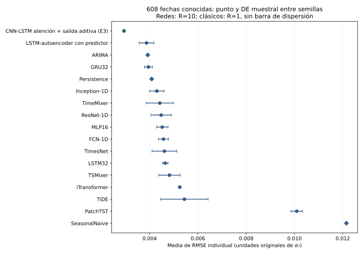
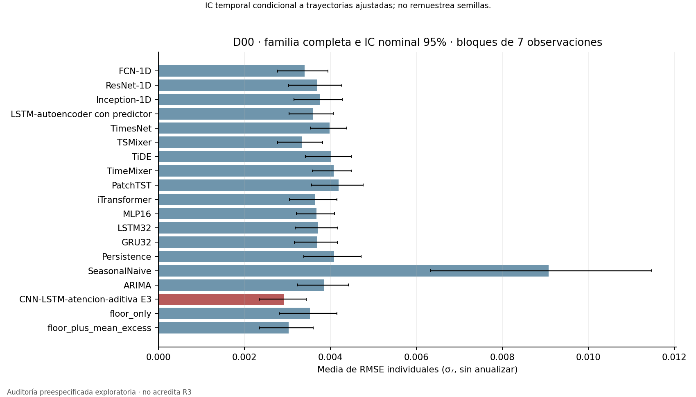
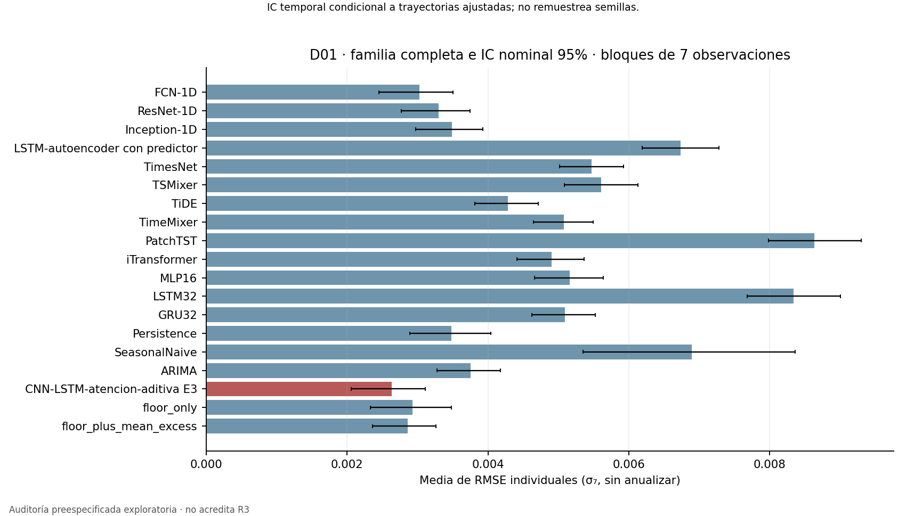
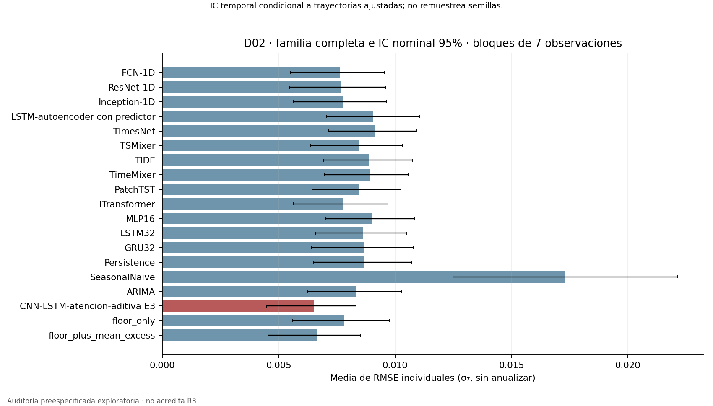
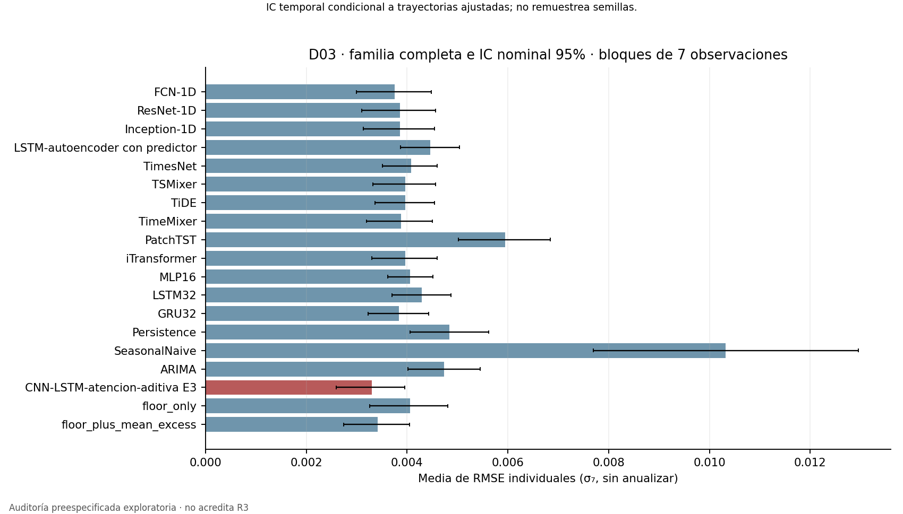
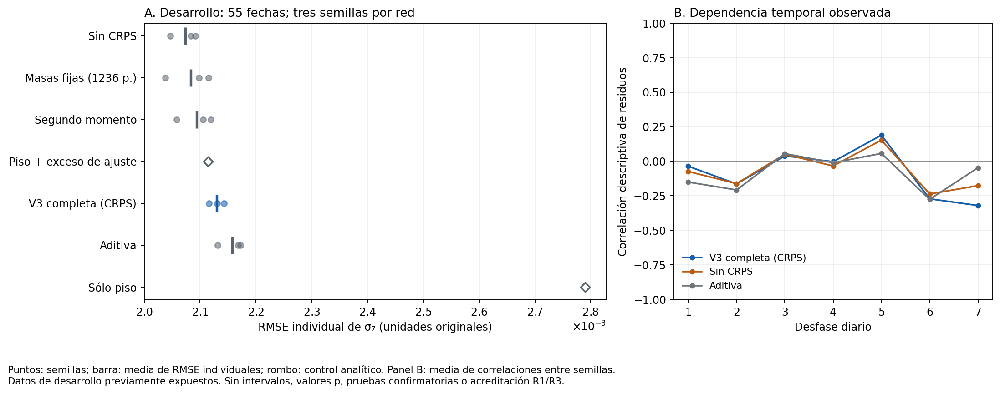

8 Bloque D Verificación estadística y evaluación ampliada#
Estado vigente del 19 de noviembre de 2026: la auditoría exploratoria de 19 sistemas en D00–D03 completó 796 trabajos, 76 paneles, 12 tablas de análisis y 16 figuras. El cierre de 8.18 contiene sus resultados y limitaciones. Las secciones anteriores conservan sus cortes históricos; los 48 contrastes retrospectivos descritos a continuación pertenecen a otra comparación y no se trasladan a la auditoría ampliada. Esta última no calculó nuevos valores p, ajuste de Holm o tres pruebas confirmatorias por rival.
Corte del 17 de noviembre de 2026: análisis retrospectivo ejecutado sobre predicciones congeladas. La CNN-LSTM con atención de contenido y salida aditiva positiva tiene diez semillas; cada una de las trece redes rivales también tiene diez. Persistence, SeasonalNaive y ARIMA conservan una trayectoria determinista cada uno. La comparación incluye los diecisiete sistemas sobre las mismas 608 fechas, sin eliminar rivales, semillas ni observaciones.
Los 48 contrastes principales —dieciséis rivales por tres procedimientos— rechazaron sus nulas frente al margen heredado, con Holm sobre los 48 p-valores y máximo p ajustado 0,0019. Las sensibilidades temporales conservaron esa decisión. Este resultado está condicionado al calendario y a los supuestos de cada método: no acredita por sí solo R3, un diseño confirmatorio previo o la originalidad del mecanismo. El MCS auxiliar conserva diez sistemas, incluido E3; no identifica un ganador único.
Los suplementos 8.10–8.12, ejecutados el 18 de noviembre, añaden una auditoría del piso observable, un diagnóstico retrospectivo de intervalos y dimensionamiento condicional para una evaluación futura. Mantienen separados esos resultados nuevos de las tablas, las predicciones y los 48 contrastes del corte anterior. Incluyen resultados adversos: el control sólo piso tiene menor MAE que E3 y la cobertura posterior cae por debajo del nominal en 2026Q1. Ninguno acredita una campaña confirmatoria o R3.
8.1 Protocolo experimental pre-registrado#
No existe un preregistro confirmatorio de esta comparación. El borrador de Bloque D continúa identificado como borrador. El plan de esta etapa se fijó en el commit 4a21b032, después de conocer las predicciones y sus métricas medias y antes de calcular estos p-valores. El código probado se fijó en 02132664 antes de ejecutar el análisis.
La cronología permite reproducir las decisiones de esta etapa; no restaura el cegamiento del test. Se conservan el plan con once insumos y SHA256 y el protocolo de análisis posterior.
El borrador histórico de protocolo conserva su archivo y su enlace de descarga anteriores. Su estado de borrador no cambia por esta evaluación posterior.
El documento canónico de trabajo organiza ahora los campos exigidos, con fecha real y estado borrador posterior a los resultados conocidos. No lleva una etiqueta que certifique un congelamiento confirmatorio anterior. Antes de una campaña futura deben resolverse y registrarse los siguientes campos; crear el archivo no completa sus decisiones:
Se conservan su copia de borrador para revisión y la matriz de preparación del protocolo. Los campos pendientes no se convierten en decisiones cerradas mediante estos archivos.
Campo mínimo de la sección 8.1 de la guía |
Evidencia disponible y cierre necesario |
|---|---|
Estándar de profundidad y compromiso |
Estándar teórico y |
Hipótesis principales y exploratorias |
La ganancia de RMSE y el margen se especifican abajo. Las hipótesis del mecanismo y predicciones secundarias deben corresponder al aporte defendido; las de penalización/saturación no se trasladan a la salida aditiva. Conservar lo posterior como exploratorio. |
Métrica primaria, secundarias y margen heredado |
Media de RMSE individuales, MAE secundaria y δ heredado. No cambiar de métrica, dirección o margen después de ver la prueba; las métricas descriptivas añadidas conservan su fecha posterior. |
Fuente del mecanismo y transferencia |
Procedencia y antecedentes, con componentes conocidos y revisión abierta. No inventar una fuente o adaptación para completar la casilla. |
Tres conjuntos adicionales |
La auditoría exploratoria completada en 8.18 evalúa D01–D03 y D00 con 19 sistemas en cada conjunto. Conserva sus dependencias de mercado y temporales; no acredita tres dominios independientes ni el diseño confirmatorio de R3. Los inventarios anteriores conservan sus cortes históricos. |
Particiones, ejecuciones, semillas y determinismo |
Calendario y diez inicializaciones registrados para la comparación histórica; 8.17 fija particiones, purgas y semillas de la auditoría exploratoria. Quedan pendientes la separación confirmatoria y el número final dimensionado por potencia. |
Familia, pruebas, ajustes y nivel |
Los 16 rivales permanecen completos. El análisis posterior tiene Holm global48, α=0,05 y MCS auxiliar al 90 %; justificar las pruebas y familias definitivas antes de confirmar. |
Optimización, cómputo y potencia |
Registrar número de configuraciones, épocas/parada y tiempo real por modelo, con capacidad y hardware. La comparación histórica no declara presupuesto equivalente. La auditoría exploratoria de 8.17 fija rejilla y presupuesto común; la potencia por contraste y conjunta sigue pendiente. |
Nd y desarrollo frente a confirmación |
Inventario conciliado de 7.14: variantes, controles, propuestas, 183 ensayos HPO y 844 trabajos con ámbitos separados. No se cuentan semillas como diseños ni se inventan decisiones sin registro. |
Fecha/tag y desviaciones |
Registrar la versión final antes de sus experimentos y mantener una bitácora fechada de desviaciones, con motivo e impacto. Un análisis no previsto conserva alcance exploratorio y no sustenta por sí solo R3. |
La ecuación (35) define la métrica primaria como la media de las RMSE individuales, en unidades originales de sigma7 poblacional, sin anualización:
Positivo favorece a E3. No se sustituye esta media por la RMSE de un ensemble o por la raíz del MSE agregado entre semillas. Se mantiene el margen del borrador:
El parámetro y la incertidumbre representada dependen de cada procedimiento. Las semillas son 271801–271810. La semilla histórica 20261116 queda fuera de la comparación. Las fechas comunes van del 1 de enero de 2025 al 31 de agosto de 2026; este calendario ya era conocido.
8.2 Equidad de la comparación#
La auditoría verificó los once archivos fijados, las fechas y objetivos exactos, las 608 máscaras válidas, las coordenadas de semilla y la conservación de los 81 predictores históricos de E2 dentro de su ampliación a 133 predictores. Las métricas guardadas coinciden con las recalculadas. Se conserva el informe de admisión.
Tratamiento |
E2: trece redes |
CNN-LSTM E3 |
|---|---|---|
Entrenamiento |
655 ejemplos; hasta 2024-10-31 |
532 ejemplos; hasta 2024-06-30 |
Purga entre ajuste y validación |
Receta final de E2 conservada |
7 ejemplos |
Validación para selección/parada |
Épocas finales fijadas por la receta previa |
116 ejemplos; 2024-07-08 a 2024-10-31 |
Calibración de la campaña histórica |
53 ejemplos; 2024-11-08 a 2024-12-30 |
No utilizada en la campaña original; el diagnóstico separado de 8.11 abre esas ventanas después |
Prueba común |
608 fechas |
Las mismas 608 fechas y objetivos |
Repeticiones estocásticas |
10 por red |
10 |
La ampliación de E2 añadió cuatro semillas por red, 52 ajustes, sin retunear las recetas. Los tres clásicos siguen almacenados una sola vez. Los ajustes y calibradores nuevos quedaron confirmados antes de producir sus nuevas predicciones de prueba. La CNN-LSTM se reutilizó desde su réplica de diez semillas.
Tener diez semillas por red no iguala las particiones, la selección ni el presupuesto de entrenamiento. Estos contrastes comparan las recetas ejecutadas; no aíslan un efecto causal de arquitectura. Se conservan separados los 5130,970719594005 segundos registrados de la ampliación E2 y los 948,439625042 segundos cerrados de E3. La etapa estadística del 17 de noviembre ejecutó cero ajustes y cero inferencias nuevas, en CPU; los 530 forwards de calibración del suplemento 8.11 se registran aparte.
La equidad futura requiere fijar la misma herramienta y número de intentos de HPO, máximo de épocas, criterio de parada y espacio relativo de búsqueda; el mismo número de configuraciones no iguala tiempo cuando su coste difiere. Debe declararse si el presupuesto se mide en configuraciones, cómputo o ambos, e igualar el tiempo total o reportar ambos análisis cuando corresponda. El esfuerzo de diseño se registra aparte del HPO. No se cambia la receta congelada de un rival para favorecer retrospectivamente la comparación.
El preprocesamiento, las variables disponibles, aumentos aplicables, particiones, fuente de pesos preentrenados y métrica deben ser comunes en el protocolo pertinente. Se reportarán parámetros y FLOPs de todos los modelos; si el original resulta sustancialmente mayor que el mejor benchmark, se incluirá una comparación de capacidad comparable o una discusión explícita del efecto del tamaño. Las medidas existentes de GPU, eager CPU y TorchScript tienen condiciones distintas: faltan una contabilidad completa por modelo de entrenamiento/inferencia, hardware, memoria pico y energía estimada con método. Una trayectoria determinista se conserva como tal: duplicarla diez veces no produce incertidumbre de inicialización.
8.3 Evaluación en conjuntos de datos adicionales#
La auditoría ampliada ya evaluó los tres conjuntos adicionales. El cierre de 8.18 contiene resultados para D01–D03 y el BTC D00 bajo la política común. El análisis histórico del 17 de noviembre, conservado en 8.1–8.12, sólo usó una cronología BTC conocida. Las semillas no son conjuntos de datos independientes; no se ejecuta Friedman o Iman–Davenport usando diez inicializaciones como si fueran diez mercados. El análisis nuevo ofrece rangos descriptivos entre conjuntos, sin una nueva prueba formal entre dominios.
La selección, admisión y comparación exploratorias están ejecutadas; permanecen pendientes los márgenes y la batería confirmatoria con su potencia y adecuación temporal. No se promedian RMSE de escalas distintas ni se denomina confirmación independiente a otro tramo ya expuesto. La presencia de exposiciones cripto compartidas y solapamiento BTC limita la generalización.
El inventario preparatorio inicial del 18 de noviembre, resumido en 8.12, identificó tres candidatos con cero conjuntos admitidos o evaluados en ese corte. La revisión posterior de calendario y política de 8.13 admitió D01 WIKI/AAPL para una tarea RAW entre sesiones: aquel corte fue 1 de 3 archivos admitidos, 0 evaluados por modelos y 2 pendientes. La actualización 3/3 y los resultados parciales se conservan en 8.17; el cierre completo está en 8.18. Cada etapa mantiene su fecha y alcance.
Cada conjunto debe mantener la misma tarea y métrica primaria y diferir del principal en al menos dos ejes pertinentes de la guía: tamaño, dominio, ruido, dimensionalidad o desbalance cuando sea aplicable. En esta regresión no se inventa un desbalance de clases; la distribución del objetivo puede describirse como contexto sin convertirla automáticamente en otro eje acreditado. Su ficha debe identificar fuente pública, licencia/condiciones, versión y hash, periodo/unidad independiente, ejes de diferencia, particiones, auditoría de fuga, presupuesto y margen con unidades. Los 17 sistemas se evalúan en cada conjunto; una limitación de memoria del dashboard no autoriza excluir un rival científico.
La consolidación podrá usar Friedman con corrección de Iman–Davenport y comparaciones por pares con Holm, o una alternativa bayesiana de rangos con signo y ROPE previamente justificada. La elección se fija antes de ver los resultados, con rangos y márgenes pertinentes; con sólo tres conjuntos la potencia global es limitada. Se informarán también diferencias, IC y efectos por conjunto y la consistencia del resultado, sin mezclar RMSE de escalas distintas en un promedio bruto. Un conjunto usado para rediseñar el modelo pasa a desarrollo y deja de aportar confirmación independiente.
8.4 Definición operativa de superioridad R3#
La guía exige seis condiciones simultáneas; ninguna se sustituye por otra:
Condición de la sección 8.4 |
Evidencia de este corte |
Cierre necesario |
|---|---|---|
1. Mejor media primaria frente a cada rival |
E3 tiene la menor RMSE media individual de los 17 sistemas históricos; MAE también favorable dentro de esa familia. |
Observado en el calendario histórico, con tratamientos de entrenamiento distintos. El control posterior sólo piso de 8.10 conserva su resultado adverso de MAE fuera de esa familia. |
2. Al menos tres pruebas distintas admisibles por contraste, control familiar y ganancia mayor que δ |
48/48 rechazos bajo tres procedimientos posteriores, con Holm global48. |
Justificar su admisibilidad según la Tabla 4 y sus supuestos. Ni la suma de tres métodos ni el MCS auxiliar sobre otra pérdida completan automáticamente esta condición. |
3. Efecto no despreciable e IC favorable |
Ganancias, IC temporales y Cohen dz entre semillas disponibles; frente al SAE la ganancia es 0,0009334571. |
La guía usa \(\lvert\delta_{\rm Cliff}\rvert\ge0,147\) o \(\lvert d_{\rm Cohen}\rvert\ge0,2\) cuando sean apropiados, y límite inferior del IC95 % de la diferencia >0, idealmente >δ. Justificar unidad y alcance; un dz condicionado al calendario no mide diferencias entre mercados. Los IC publicados son marginales, no simultáneos. |
4. Consistencia adicional |
No hay resultados en tres conjuntos adicionales. |
Mejor media en al menos dos de los tres y ninguna inferioridad significativa frente a un rival en cualquiera. La ausencia de rechazo de inferioridad no se renombra como equivalencia o no inferioridad demostrada. |
5. Adecuación del propio modelo |
Esta etapa compara errores guardados; no completa las Tablas A/B de E3. |
Superar el baseline trivial, brecha train–validación dentro del margen de adecuación, calibración/residuos aceptables y consistencia validación–prueba bajo datos y riesgos comparables. |
6. Robustez a la elección de la prueba |
Bloques/rezagos 7/14/28 y MAE secundaria mantienen decisiones posteriores. |
Alternativas paramétricas/no paramétricas pertinentes y sensibilidad a las correcciones que el diseño admita. Nadeau–Bengio no se aplica a días o semillas de esta única cronología; esa limitación debe justificarse, sin simular una comparación inexistente. |
Además siguen pendientes el preregistro previo, la comparación justa y la potencia exigida por el estándar. Por tanto, R3 permanece sin acreditar. La inferioridad no rechazada, la pertenencia al MCS o un p pequeño no prueban equivalencia, originalidad o cumplimiento del entregable completo.
8.5 Familia de contrastes#
Se conservaron los dieciséis rivales fijados en el borrador:
Grupo |
Modelos |
|---|---|
Top 10 de E2 |
FCN-1D, ResNet-1D, Inception-1D, LSTM-autoencoder con predictor, TimesNet, TSMixer, TiDE, TimeMixer, PatchTST, iTransformer |
Referencias neuronales |
MLP16, LSTM32, GRU32 |
Clásicos deterministas |
Persistence, SeasonalNaive, ARIMA |
Sistema |
RMSE media |
DE entre semillas |
MAE |
sMAPE (%) |
R² medio |
Cobertura 90% (%) |
Anchura media |
|---|---|---|---|---|---|---|---|
CNN-LSTM-atencion-aditiva E3 |
0.002939432 |
0.000047125 |
0.001892827 |
11.098 |
0.911779 |
Pendiente |
Pendiente |
LSTM-autoencoder con predictor |
0.003872889 |
0.000307325 |
0.002860847 |
16.748 |
0.846018 |
96.102 |
0.015971111 |
ARIMA |
0.003921625 |
— |
0.002499710 |
14.277 |
0.843008 |
94.572 |
0.015443316 |
GRU32 |
0.003949975 |
0.000165270 |
0.003004820 |
17.793 |
0.840479 |
96.974 |
0.017545518 |
Persistence |
0.004085596 |
— |
0.002353164 |
13.229 |
0.829605 |
93.257 |
0.015117306 |
Inception-1D |
0.004300219 |
0.000297330 |
0.003092672 |
17.706 |
0.810420 |
91.891 |
0.014500613 |
TimeMixer |
0.004423327 |
0.000560454 |
0.003394541 |
19.504 |
0.797384 |
92.105 |
0.014756650 |
ResNet-1D |
0.004476908 |
0.000423725 |
0.003143841 |
17.599 |
0.793752 |
90.806 |
0.012974740 |
MLP16 |
0.004522873 |
0.000240218 |
0.003495322 |
19.873 |
0.790649 |
96.530 |
0.020016294 |
FCN-1D |
0.004574328 |
0.000208060 |
0.003059855 |
16.967 |
0.786003 |
89.984 |
0.012203510 |
TimesNet |
0.004610965 |
0.000513763 |
0.003326514 |
18.564 |
0.780540 |
93.026 |
0.015971274 |
LSTM32 |
0.004643827 |
0.000116435 |
0.003685474 |
21.166 |
0.779736 |
97.385 |
0.020349582 |
TSMixer |
0.004821543 |
0.000444445 |
0.003434629 |
18.869 |
0.760874 |
93.536 |
0.018195702 |
iTransformer |
0.005250680 |
0.000052536 |
0.003980737 |
22.007 |
0.718540 |
84.243 |
0.014100908 |
TiDE |
0.005439748 |
0.000982847 |
0.003864929 |
21.610 |
0.689058 |
92.895 |
0.018817514 |
PatchTST |
0.010093051 |
0.000238637 |
0.007569446 |
38.627 |
-0.040421 |
93.635 |
0.031247636 |
SeasonalNaive |
0.012148568 |
— |
0.008520579 |
42.129 |
-0.506593 |
92.928 |
0.037180183 |
La tabla incorpora la CNN-LSTM y las diez semillas de cada red, sin elegir una réplica por rendimiento. MAE, sMAPE y R² se calculan por predictor y después se promedian. sMAPE se expresa en porcentaje; RMSE, MAE y anchura usan unidades originales de σ7, sin anualización. Para una trayectoria,
con contribución cero cuando ambos valores de un término sMAPE son cero. La media de R² no es el R² de un ensamble. E3 obtiene sMAPE 11,0977 % y R² medio 0,911779 en este calendario. La tabla abreviada del corte estadístico conserva sus bytes; el suplemento amplía métricas descriptivas y no cambia sus p-valores.
La cobertura y anchura de E2 se reconstruyen exclusivamente con los cuantiles residuales ya congelados de cada predictor, mediante \([\max(0,\widehat y-q),\widehat y+q]\); no se ajustó un nuevo calibrador con prueba. Son medias de las coberturas y anchuras individuales, no de un intervalo de ensamble. La campaña original E3 no produjo un cuantil ni intervalo calibrado, por lo que sus dos campos permanecen ausentes en esta tabla histórica y en el servicio. El suplemento separado 8.11 sí calcula diez cuantiles posteriores; no reescribe estos campos o el protocolo anterior. La DE entre semillas no rellena esas casillas y el nominal 90 % no constituye garantía individual bajo dependencia o cambio temporal.


Figura 2 RMSE medio y DE muestral entre inicializaciones. Los clásicos tienen R=1 y no reciben una barra de dispersión artificial. La DE entre semillas no es un intervalo predictivo ni temporal.#
La CNN-LSTM obtuvo RMSE medio 0,0029394324 y MAE medio 0,0018928273. El mejor rival por RMSE fue LSTM-autoencoder, con 0,0038728895: la reducción relativa observada de E3 fue 24,10 %. Frente a ese rival, la ganancia absoluta fue 0,0009334571, con IC95% temporal marginal [0,0006329359; 0,0012131746].
La afirmación «supera a todos» es una regla de unión–intersección: deben satisfacerse todos los contrastes exigidos, no un subconjunto favorable. La familia tiene 16 rivales, aunque la guía ilustre otros tamaños con m≈12; el control posterior abarca sus 48 componentes de prueba. Cualquier exclusión de una futura familia tendría que justificarse antes del congelamiento por razones ajenas al desempeño observado. Las familias de ablación, conjuntos adicionales, subgrupos y horizontes se declaran y controlan por separado; no se usa su separación para hacer más permisiva la afirmación principal.
8.6 Reglas metodológicas para que las pruebas sean válidas#
Procedimiento ejecutado |
Unidad y supuestos |
Interpretación |
|---|---|---|
Bootstrap temporal circular pareado |
9999 réplicas; bloques de 14 días sincronizados para todos los sistemas y semillas; trayectorias ajustadas fijas; aproximación de dependencia débil y estabilidad temporal |
Ruido de la ganancia de RMSE centrado para contrastar la frontera delta; incertidumbre del calendario condicionada a los ajustes |
Influencia de la media de RMSE con Bartlett-HAC |
Derivada de cada raíz antes de promediar, 14 rezagos, aproximación normal y varianza de largo plazo |
Alternativa temporal; no es DM–HLN ni un traslado del margen de RMSE a MSE |
t pareada entre semillas |
Diez ganancias por identificador de semilla, 9 grados de libertad; inicializaciones independientes y ganancias aproximadamente normales |
Incertidumbre de inicialización condicionada al calendario; el clásico aporta una trayectoria fija, no diez ajustes inventados |
Para HAC se usa la influencia
El bootstrap recalcula la métrica completa y compara su ruido centrado con la distancia observada al margen. Usa la corrección Monte Carlo de uno en numerador y denominador, con resolución 0,0001. Los p no estimables permanecen en la familia mediante una contribución conservadora de uno para el ajuste y se reportan como no estimables.
Los dieciséis diagnósticos Shapiro entre semillas no rechazaron normalidad a 0,05; el menor p fue 0,0564. Eso no demuestra normalidad con diez observaciones. Los supuestos de estabilidad temporal y del calendario tampoco quedan certificados por los p de comparación. Holm no corrige la exposición previa al test, la selección del diseño ni un supuesto inválido.
La guía exige al menos tres pruebas distintas y apropiadas y al menos un procedimiento global o con control de comparaciones múltiples; no prescribe literalmente idéntico ámbito de incertidumbre. El análisis posterior aplica Holm global48, pero los procedimientos y sus alcances deben justificarse para la hipótesis F2a: sus rechazos no acreditan automáticamente toda la Tabla 4 ni R3. No se aplican correcciones Nadeau–Bengio a días o semillas de esta única cronología, ni Clark–West sin justificar anidamiento.
Relación con las pruebas admisibles de la Tabla 4#
La ruta es temporal, F2a. La comparación actual no se renombra para hacer coincidir métodos diferentes con la tabla de la guía:
Método de la fila temporal de la guía |
Relación con lo ejecutado y decisión que falta |
|---|---|
MCS |
Hay un MCS90 auxiliar de MSE diario medio entre semillas. Es un procedimiento global, pero su estimando no es la media de RMSE ni la ganancia mayor que δ; no sustituye un contraste de ese margen. |
Diebold–Mariano con corrección HLN por horizonte |
No se ejecutó con ese nombre o construcción. El HAC de influencia RMSE es otro procedimiento. La pérdida, el horizonte y la dependencia temporal deberán justificarse; h=1 no elimina la dependencia por ventanas de σ7 solapadas. |
Giacomini–White o Clark–West según anidamiento |
No ejecutados. Exigen el diseño y supuestos pertinentes; no se aplica Clark–West a arquitecturas arbitrarias por compartir datos, ni se añade un instrumento después de mirar qué produce un p favorable. |
Friedman sobre series u orígenes |
No ejecutado con unidades independientes justificadas. Semillas o días correlacionados no se convierten en series independientes para llenar la tabla. |
Bootstrap estacionario |
El análisis usa bloques circulares de longitud fija, no el bootstrap estacionario de longitud aleatoria. Debe justificarse esa alternativa y su alcance; no se presenta como un procedimiento idéntico por cambiarle el nombre. |
La t entre inicializaciones añade información condicional al calendario, pero no se convierte en una tercera prueba temporal de la Tabla 4. La pertinencia de la batería final debe cerrarse antes de la confirmación, conservando los resultados posteriores ya calculados. Las filas tabular, espacial, imágenes o lenguaje no se importan como pruebas adicionales de BTC por estar enumeradas en la guía.
Supuestos, ajuste, calibración y residuos#
El pareado de fechas, objetivos y coordenadas de semilla fue verificado. El pareado estricto de una campaña justa incluye además mismas particiones y preprocesamiento; no queda satisfecho por las 608 fechas comunes cuando los tratamientos de ajuste difieren. La prueba sellada se consulta al final con hiperparámetros, umbrales y parada fijados en validación. El calendario actual ya expuesto no se vuelve sellado por volver a puntuarlo.
Diagnóstico pertinente a F2 |
Qué debe comprobarse y alcance actual |
|---|---|
Dependencia de residuos y de pérdidas |
La actualización de 8.20 ejecuta Ljung–Box(7/14) y ARCH-LM(7) en dos versiones de pesos y familias diagnósticas separadas, con supuestos y resultados adversos. BDS no se añade sin justificar su pertinencia. Son diagnósticos retrospectivos y no acreditan adecuación completa. |
Distribución y calibración puntual |
Jarque–Bera como diagnóstico, Mincer–Zarnowitz y residuos con intercepto/pendiente y cohortes claramente definidas. La falta de normalidad de residuos no se sustituye por Shapiro entre diez ganancias de semillas. |
Ajuste y sobreajuste del original |
Tablas A/B propias, baseline trivial, brecha con el margen δg, riesgos comparables y consistencia dentro/fuera de muestra. δg conserva el valor numérico heredado cuando corresponda, pero su nula de brecha no es la de ganancia mayor que δ. Los diagnósticos de otras redes no acreditan a E3. |
Calidad probabilística |
PIT, cobertura, cuantiles, pinball, CRPS o log-verosimilitud sólo cuando exista la salida probabilística y el procedimiento que los defina. La cabeza aditiva es puntual: una colección de semillas no es por sí sola una distribución predictiva calibrada. |
Cambio y estabilidad |
Comparación de errores dentro/fuera de muestra y pruebas de estabilidad como Giacomini–Rossi cuando proceda. Deben distinguir cambio de distribución, mala especificación y fuga; ninguna conclusión se deduce de un p de superioridad. |
Se reportarán estadísticos, supuestos, p crudos/ajustados y unidades. La significancia práctica deberá discutirse con su magnitud, IC y coste adicional, incluso cuando p sea pequeño. Estos controles de adecuación y calidad no se completan mediante la tabla de comparación de modelos.
8.7 Estrategia estadística: familias, potencia y agregación#
8.7.1 Control del error por familia#
Se fijó una familia principal de 48 hipótesis, con Holm a alfa=0,05. Este control es más amplio que las tres familias de dieciséis propuestas en el borrador. No se eligió la prueba de menor p ni se excluyeron rivales después de ver el resultado. Para la descripción conjunta por rival se exige que los tres p ajustados sean menores que 0,05.
Para p ordenados \(p_{(1)}\le\cdots\le p_{(m)}\), el ajuste monótono es
En este corte \(m=48\) en la ecuación (39). Se informa por rival el máximo de sus tres p ajustados: todos deben rechazar. Holm controla el error familiar bajo p válidos sin exigir independencia entre pruebas; no corrige una prueba inválida o el uso previo del test para diseñar.
Rival |
Ganancia RMSE |
IC95% temporal marginal |
p Holm bootstrap |
p Holm HAC |
p Holm t semillas |
Tres rechazos exploratorios |
|---|---|---|---|---|---|---|
FCN-1D |
0.001634896 |
[0.000753646; 0.002344102] |
0.0019 |
0.0018 |
1.54712e-07 |
Sí |
ResNet-1D |
0.001537475 |
[0.000920657; 0.002041157] |
0.0017 |
0.000291523 |
8.98986e-05 |
Sí |
Inception-1D |
0.001360787 |
[0.000940612; 0.001713045] |
0.0017 |
8.47316e-07 |
1.0829e-05 |
Sí |
LSTM-autoencoder con predictor |
0.000933457 |
[0.000632936; 0.001213175] |
0.0017 |
4.81158e-05 |
0.000581851 |
Sí |
TimesNet |
0.001671532 |
[0.001216163; 0.002075019] |
0.0017 |
1.39839e-09 |
0.000173996 |
Sí |
TSMixer |
0.001882111 |
[0.001367126; 0.002352793] |
0.0017 |
1.95423e-09 |
1.97047e-05 |
Sí |
TiDE |
0.002500315 |
[0.001919999; 0.003034907] |
0.0017 |
2.63593e-13 |
0.000511061 |
Sí |
TimeMixer |
0.001483895 |
[0.001165846; 0.001773545] |
0.0017 |
5.22973e-14 |
0.000787556 |
Sí |
PatchTST |
0.007153618 |
[0.005079083; 0.008978976] |
0.0017 |
3.14787e-10 |
3.67526e-13 |
Sí |
iTransformer |
0.002311247 |
[0.001738825; 0.002844864] |
0.0017 |
9.41143e-12 |
2.82733e-14 |
Sí |
MLP16 |
0.001583441 |
[0.001153515; 0.001963665] |
0.0017 |
3.99019e-09 |
4.17659e-07 |
Sí |
LSTM32 |
0.001704394 |
[0.001227899; 0.002146686] |
0.0017 |
9.50516e-09 |
2.57037e-09 |
Sí |
GRU32 |
0.001010543 |
[0.000677054; 0.001299191] |
0.0017 |
3.1278e-05 |
3.22474e-06 |
Sí |
Persistence |
0.001146163 |
[0.000636396; 0.001526256] |
0.0018 |
0.00126769 |
1.1124e-11 |
Sí |
SeasonalNaive |
0.009209135 |
[0.006116206; 0.011884003] |
0.0017 |
1.46004e-07 |
1.20036e-20 |
Sí |
ARIMA |
0.000982192 |
[0.000629829; 0.001261898] |
0.0017 |
0.000113433 |
6.77669e-11 |
Sí |
Los máximos p Holm fueron 0,0019 en bootstrap, 0,0018 en HAC y 0,0007875561 en la t entre semillas. Los 16 rivales registran los tres rechazos exploratorios. La tabla completa conserva los p crudos, ajustes, estadísticos, incertidumbre, diagnósticos y alcances.

Figura 3 Ganancias e IC95% temporales marginales con bloque 14. Una ganancia positiva favorece a E3. Estos intervalos no son simultáneos para toda la familia.#
Los límites nominales del 95% no deben confundirse con límites simultáneos. La cota inferior Bonferroni48 del bootstrap frente a FCN-1D es 0,0001980411, menor que delta, aunque el contraste Holm rechace. La conclusión no se sustituye por una afirmación inexistente de que todas las cotas Bonferroni superan el margen.
8.7.2 Potencia y número de semillas#
El corte histórico no estimó potencia prospectiva, potencia conjunta ni MDE a partir de este test. Diez semillas cumplen una cantidad de repeticiones; no demuestran el objetivo de potencia de la guía. Calcular potencia observada usando el efecto de este mismo resultado no reemplazaría un dimensionamiento previo con un piloto adecuado. El suplemento 8.12 añade referencias condicionales de tamaño y MDE usando dispersión histórica y alternativas declaradas; no estima la potencia real de la campaña o de su batería completa.
La guía exige un piloto con al menos cinco semillas para estimar la dispersión de diferencias pareadas frente a cada rival y dimensionar la campaña antes de congelarla: potencia de al menos 0,90 por contraste, potencia conjunta reportada y diez semillas como mínimo o más si hace falta. Deben incluirse las decisiones de las tres pruebas y Holm; semillas y calendario no son fuentes de incertidumbre intercambiables. El piloto y la alternativa planificada no se eligen retrospectivamente para declarar suficiente el tamaño ya usado.
La aproximación normal bilateral ilustrada en la guía, con \(\alpha'=0,05/m\), es
donde \(g\) es la distancia de la alternativa planificada a la frontera de la nula y \(\widehat\sigma_d\) la dispersión pertinente. Si se contrasta igualdad y se planifica detectar una diferencia δ, entonces \(g=\delta\). Para nuestra nula de relevancia \(\Delta\le\delta\), una alternativa futura \(\Delta_1>\delta\) da \(g=\Delta_1-\delta\); poner δ en el denominador cambiaría el problema. La elección bilateral/unilateral y su cuantil debe fijarse de acuerdo con la hipótesis, no por el resultado. Esta fórmula no incorpora por sí sola dependencia temporal, estimación de hiperparámetros o incertidumbre conjunta.
Como referencia puramente ilustrativa, con m=12, potencia 0,80 y diseño bilateral normal, una distancia de una DE requiere aproximadamente 14 pares; media DE requiere unos 55. No son el R calculado para E3 ni sustituyen la exigencia 0,90. Si la campaña no alcanza potencia suficiente deberá aumentarse el diseño antes del cierre y, si continúa limitada, reportar su MDE y resultado no concluyente. La ausencia de significancia no demuestra equivalencia: TOST o ROPE requieren margen, procedimiento y datos pertinentes prefijados.
La resolución exacta también importa. Sin empates ni ceros, el menor p bilateral de Wilcoxon con n pares es \(2^{1-n}\): con cinco pares es 0,0625 y no puede rechazar a 0,05. Para superar el primer umbral conservador de Holm, \(0,05/m\), hacen falta al menos nueve pares si m=12, diez si m=16 y once si m=48. Son límites de resolución para esa comparación inicial; un paso posterior de Holm puede tener otro umbral, y estos números no prueban potencia 0,90. No se sustituyen pares independientes por días o semillas×días para alcanzar el conteo.
La potencia de «supera a todos» corresponde al evento conjunto de todas las decisiones exigidas. Multiplicar potencias marginales sólo sería válido bajo independencia: por ejemplo, \(0,90^{12}\approx0,28\) es una ilustración de ese supuesto, no una estimación de este experimento. La dependencia por calendario, rival y método exige una planificación conjunta adecuada. La potencia retrospectiva no se obtiene de los p observados.
Las ilustraciones numéricas de planificación, su script reproducible y la revisión de métodos y alcances documentan estas cuentas y sus supuestos. Son ejemplos matemáticos, no un análisis de potencia ejecutado para la campaña E3.
Los consumos históricos se mantienen cerrados y separados. El registro de ejecución CPU identifica versiones, hashes y tiempo numérico; no se añaden ajustes o inferencias del modelo.
8.7.3 Agregación jerárquica y múltiples conjuntos de datos#
Las unidades se mantienen diferenciadas: una serie compartida, bloques temporales, diecisiete sistemas y sus inicializaciones. Los 6080 pares semilla-fecha de una red no se tratan como 6080 casos iid. La t entre semillas y la inferencia temporal condicionan aspectos distintos; no forman una estimación conjunta de incertidumbre de entrenamiento, selección y mercado.
La tabla de efectos incluye Cohen dz de ganancias pareadas entre semillas e intervalos bootstrap nominales, con su alcance condicionado al calendario. No se interpreta como efecto entre mercados independientes.
Una campaña con varias series, particiones o unidades debe declarar su jerarquía antes de inferir: observaciones correlacionadas se agregan a la unidad pertinente o se modelan con dependencia explícita. El esquema de efectos mixtos de la guía,
se refiere al efecto del modelo \(j\), de la unidad \(i\) y de la semilla \(r\); no autoriza tratar cada día de una serie como un efecto aleatorio iid. Su uso exigiría justificar estructura, correlación y estimabilidad y contrastar al original con cada rival con el control familiar fijado. No se ha ajustado ese modelo aquí. En varios conjuntos se reportarán también diferencias, IC, efectos y probabilidad de superioridad estimada sobre unidades válidas, con el significado de esa probabilidad explícito.
La sensibilidad de la conclusión debe distinguir alternativa de prueba, métrica secundaria registrada y subconjunto razonable de semillas. Se conservan las sensibilidades posteriores de 8.8 sin elegir la más favorable. No se usa «tendencia a la significancia»: falta de evidencia de diferencia y evidencia de equivalencia son afirmaciones distintas.
8.8 Robustez, sensibilidad y calidad probabilística#
Bloque / rezagos |
Rechazos de 48 |
Máximo p Holm |
Uso |
|---|---|---|---|
14 |
48 |
0.0019 |
Principal |
7 |
48 |
0.0029 |
Sensibilidad; no reemplaza principal |
28 |
48 |
0.001853920056482344 |
Sensibilidad; no reemplaza principal |
Los bloques/rezagos 7 y 28 conservaron 48/48 rechazos, cada uno con su familia completa y sin reemplazar la configuración principal de 14. Los máximos p Holm fueron 0,0029 y 0,0018539201, respectivamente. Se conservan todos los contrastes de sensibilidad.
Como métrica secundaria, los 16 contrastes bootstrap de MAE frente a cero rechazaron con Holm16, con máximo p ajustado 0,0016. No se fijó ni se inventó un margen práctico de MAE. La familia secundaria completa y los subconjuntos descriptivos de primeras/últimas cinco semillas permanecen disponibles.
MCS auxiliar con el modelo E3 incluido#
El MCS usa Tmax, nivel 90%, 4999 réplicas y bloques 14. Su pérdida es el MSE diario medio entre semillas, otro estimando respecto a la media de RMSE primaria. Tras siete exclusiones, conserva diez sistemas, con p del último contraste global 0,1442:
Modelo |
MSE diario medio |
MCS90% |
p secuencial de exclusión |
|---|---|---|---|
CNN-LSTM-atencion-aditiva E3 |
8.642261669e-06 |
Permanece |
|
LSTM-autoencoder con predictor |
1.508427687e-05 |
Permanece |
|
ARIMA |
1.537914089e-05 |
Permanece |
|
GRU32 |
1.562688644e-05 |
Permanece |
|
Persistence |
1.669209359e-05 |
Permanece |
|
Inception-1D |
1.857144917e-05 |
Permanece |
|
TimeMixer |
1.984852081e-05 |
Permanece |
|
ResNet-1D |
2.020429111e-05 |
Permanece |
|
MLP16 |
2.050831835e-05 |
Permanece |
|
FCN-1D |
2.09634371e-05 |
Permanece |
|
TimesNet |
2.149855073e-05 |
Excluido |
0.078 |
LSTM32 |
2.157732592e-05 |
Excluido |
0.078 |
TSMixer |
2.342505927e-05 |
Excluido |
0.0306 |
iTransformer |
2.757211991e-05 |
Excluido |
0.0068 |
TiDE |
3.046024196e-05 |
Excluido |
0.0052 |
PatchTST |
0.0001019209273 |
Excluido |
0.0014 |
SeasonalNaive |
0.0001475877012 |
Excluido |
0.0052 |
E3 permanece junto a ARIMA, FCN-1D, GRU32, Inception-1D, LSTM-autoencoder, MLP16, Persistence, ResNet-1D y TimeMixer. Pertenecer al conjunto no prueba equivalencia ni un ganador único. Ese resultado global de MSE no se renombra como contraste de ganancia RMSE mayor que delta. El detalle secuencial del MCS incluye pérdidas, estadísticos y p.
Continúan pendientes la sensibilidad a hiperparámetros propios, las ablaciones comparables, las perturbaciones y curvas de tamaño de muestra, diagnósticos completos de adecuación, explicaciones verificadas, costes comparables y los tres conjuntos adicionales. La auditoría física de 8.10 y la calibración posterior de 8.11 aportan diagnósticos ejecutados con alcance exploratorio; no completan la validación probabilística confirmatoria o su integración en el servicio. Las sensibilidades de bloques y semillas aquí reportadas conservan su alcance histórico.
Estudios exigidos por la Tabla 5#
Estudio |
Evidencia actual y mínimo que falta |
|---|---|
Sensibilidad a hiperparámetros |
Falta variar hiperparámetros propios con superficies/curvas, región de ventaja y sensibilidad frente a benchmarks. Replicar la receta aditiva no constituye HPO ni este estudio. |
Estabilidad por semilla y partición |
Hay diez inicializaciones de una receta sobre un mismo calendario; se reportan dispersión y subgrupos. Falta variación pertinente de particiones, IC/coeficiente de variación con unidades claras y la comparación ANOVA/Kruskal–Wallis sólo cuando su diseño la justifique. Las semillas no son mercados independientes. |
Perturbaciones controladas |
Falta aplicar a toda la familia al menos tres severidades y curvas de degradación. En OHLCV, ruido, datos faltantes o atípicos deben respetar o declarar la coherencia temporal/física; no se traslada sin cautela el estrés artificial de E2. |
Tamaño de muestra y escalabilidad |
Faltan curvas de aprendizaje —por ejemplo 10 %, 25 %, 50 % y 100 %— con varias semillas, más tiempo y memoria al variar tamaño de entrada. Esos porcentajes ilustran el estudio, no corridas realizadas. |
Cambio de distribución |
Falta un periodo, dominio o fuente fuera de toda decisión de diseño. Los conjuntos adicionales y sus derechos/particiones se eligen antes de ver desempeño; reutilizar un calendario conocido no lo vuelve independiente. |
Calibración y reglas de puntuación |
El suplemento 8.11 calcula diez cuantiles posteriores con 53 ventanas de calibración y reporta score de intervalo sobre pronósticos históricos guardados. La campaña original y la app conservan su perfil sin intervalo E3. Faltan validación confirmatoria y los demás diagnósticos de adecuación; pinball, CRPS o log-score requieren las salidas que los definan. No se inventan ECE o probabilidades de clasificación para este objetivo. |
Cuantificación de incertidumbre |
E2 conserva sus cuantiles históricos; 8.11 añade cobertura, anchura, subgrupos e IC temporales posteriores para E3. La cobertura agregada de 94,49 % cae a 86,22 % en 2026Q1 y no demuestra calibración uniforme. El nominal 90 % no es garantía individual; el bootstrap condiciona en modelos y cuantiles fijos. La DE de semillas no reemplaza un intervalo predictivo. |
Eficiencia y frontera de Pareto |
Parámetros y algunos costes están inventariados; faltan FLOPs completos, latencias CPU/GPU, memoria pico, entrenamiento y energía con método común. Las tres referencias TorchScript no representan el catálogo completo ni una medición de Render. |
Análisis de errores |
El piloto conserva diagnósticos posteriores por régimen: en 18 fechas de objetivo realizado alto la aditiva tuvo RMSE 22,50 % mayor que M00 proyectado. Ese grupo no está disponible al pronosticar y no identifica una causa. Faltan escenarios prefijados, errores compartidos con rivales y discusión de fallos sin ocultar desenlaces adversos. |
Las intervenciones y criterios se fijarán antes de medir la evaluación correspondiente, con el mismo protocolo para todos los rivales. Una explicación por atención requiere además fidelidad y estabilidad comparadas con el mejor benchmark; no se convierte en evidencia causal sólo por visualizar sus pesos.
8.9 Reporte obligatorio de resultados#
Producto |
Evidencia de este corte |
Límite |
|---|---|---|
Tabla histórica de 17 sistemas |
RMSE, DE, MAE, sMAPE y R²; cobertura/anchura E2 reconstruidas de cuantiles congelados e IC bootstrap entre semillas disponibles por separado |
Mismas fechas y tratamientos de entrenamiento distintos; campaña original y servicio sin intervalos E3. Los diagnósticos nuevos se separan en 8.10–8.12; recursos completos comparables pendientes |
Familia completa |
48 contrastes, p crudos/Holm, estadísticos, efectos, IC, diagnósticos y conclusión |
Retrospectivos; distintos ámbitos; los supuestos y la admisibilidad no se certifican sólo por rechazar |
Sensibilidad y MAE |
Bloques 7/14/28, subgrupos de semillas y Holm16 secundario |
No perturbaciones o nuevos conjuntos |
MCS con original |
Diez sistemas retenidos al 90% |
MSE auxiliar; no ganador único o equivalencia |
Potencia y MDE |
Ausentes en el diseño histórico; 8.12 añade 864 escenarios condicionales y referencias de MDE |
No son potencia real o conjunta acreditada; requieren un diseño/piloto nuevo pertinente |
Tablas A/B del original |
Criterios y diagnósticos necesarios identificados en 8.6 |
Pendientes de E3 con riesgos comparables, interpretación y fuentes; no se heredan de otras redes |
Tabla por conjunto adicional y prueba consolidada |
Especificación de selección en 8.3 e inventario preparatorio de tres candidatos en 8.12 |
Cero admitidos/evaluados; faltan selección final y familia completa con controles aplicados a cada conjunto |
Figuras y tablas de robustez/eficiencia/calidad |
Matriz de estudios en 8.8 y antecedentes con su alcance |
Faltan los estudios de la Tabla 5 que no cubren bloques/semillas o el piloto histórico |
Discusión de resultados |
Ganancias favorables y desenlaces adversos conservados |
Explicar límites de capacidad, ruido, selección, variabilidad y potencia sin atribuir causas no demostradas |
La tabla maestra final debe integrar media±DE e IC95 % bootstrap de la métrica, parámetros, FLOPs, tiempos de entrenamiento/inferencia, hardware y alcance de cada coste. La tabla de hipótesis debe conservar prueba, nula, supuestos comprobados, estadístico, p crudo/ajustado, tamaño del efecto, IC y conclusión, incluidos casos no estimables. El análisis de potencia deberá reportar la dispersión piloto, semillas usadas, MDE y potencia conjunta; las ilustraciones de 8.7 no rellenan esos campos. Una discusión honesta de limitaciones y resultados adversos forma parte del reporte, sin asignar aquí una nota o tope académico.
El suplemento completo de métricas conserva número de predictores, calendario y estado de intervalos. Sus métricas por predictor permiten verificar las medias. La tabla de incertidumbre de RMSE entre semillas usa 10000 remuestras de las diez inicializaciones, con semilla fijada y los mismos índices para las redes. El IC95 % de E3 es [0,0029132823; 0,0029684040], coincidente con el ya publicado para su estabilidad. Los clásicos, con una trayectoria, no reciben un IC de inicialización ficticio.
Estos son intervalos marginales de la media entre inicializaciones condicionados al calendario conocido: no describen incertidumbre temporal, error predictivo futuro o cobertura simultánea de la familia. El informe de fuentes, definiciones y reconciliación y su ejecutor del suplemento documentan el cálculo desde las trayectorias congeladas, sin nuevos ajustes, inferencias de mercado o contrastes de hipótesis.
El workflow del suplemento ejecuta nueve pruebas unitarias de las definiciones y la integridad, reproduce las ilustraciones de planificación y reconcilia las tablas con once insumos verificados por hash. También comprueba las copias publicadas y el borrador canónico. Su alcance es cálculo sobre pronósticos ya guardados; no entrena, calibra ni estima la potencia real del proyecto.
Las 42 pruebas de métodos e insumos aprobaron en integración continua, con los archivos inmutables verificados y casos artificiales para los procedimientos numéricos. El registro de verificación enlaza la ejecución de CI y distingue esa comprobación de una reproducción humana independiente.
Los resultados numéricos completos, el manifiesto de artefactos y el inventario de publicación permiten comprobar las tablas. El código y sus pruebas se conservan en experiments/e3_estadistica_posterior_20261117.
Para reproducir, se instalan las versiones de requirements.txt y se ejecuta python experiments/e3_estadistica_posterior_20261117/run.py --download --output work/e3_estadistica_reproduccion; report.py exporta las tablas de lectura desde esa salida. Los datos se descargan desde commits inmutables y se verifican por SHA256. No se reentrena el modelo ni se requieren GPU o Google Drive.
La conclusión admisible es evidencia retrospectiva favorable a la receta E3 bajo los procedimientos y supuestos declarados. No se retrofecha el protocolo, no se oculta la diferencia de entrenamiento y no se transforma este análisis en certificación R1, R2 o R3.
8.10 Suplemento exploratorio: piso observable y proyección física#
La auditoría del 18 de noviembre verifica las 143 trayectorias congeladas, sus once insumos por SHA256 y la cohorte cruda auditada. Conserva los 17 sistemas y las 608 fechas, sin seleccionar semillas o eliminar observaciones. Sólo realiza operaciones sobre entradas y pronósticos guardados: cero ajustes, cero nuevos forwards y cero contrastes de hipótesis. La proyección y el control sólo piso son comparadores exploratorios posteriores, separados del catálogo y de los 48 contrastes anteriores.
Restricción conocida al emitir el pronóstico#
La entrada de una fecha objetivo \(t\) tiene siete cierres completos, desde \(t-7\) hasta \(t-1\). Proporciona seis retornos logarítmicos conocidos, cuya media es \(\mu_6\); el retorno \(r_t\) todavía no se conoce. La identidad para el objetivo poblacional, sin anualizar, es
El divisor de \(A_t\) es siete, aunque use seis retornos; \(A_t\) es varianza y \(b_t\) está en unidades de σ₇. El piso es alcanzable cuando el retorno desconocido coincide con la media conocida. Se calcula exclusivamente con los siete cierres pasados, sin usar \(r_t\), el objetivo realizado o estadísticas ajustadas.
La transformación \(p_t^+=\max(p_t,b_t)\) tiene una propiedad elemental: si \(y_t\ge b_t\) y \(p_t<b_t\), entonces
Por encima del piso la salida queda idéntica. Por ello la proyección no aumenta ninguna de esas pérdidas por observación cuando se cumple la premisa. No demuestra novedad, calibración o superioridad fuera de muestra; cuantifica una incoherencia física de las salidas respecto a este objetivo e historia conocidos.
Resultado sobre la familia completa#
Se encontraron 20.007 incumplimientos entre 86.944 pares predictor–fecha: 23,01 %. Las trece redes E2 tienen salidas inferiores al piso; E3 y Persistence no tienen ninguna y sus pronósticos quedan idénticos. El conteo principal usa tolerancia absoluta de \(10^{-12}\) en σ₇ y conserva también el conteo estricto. La proyección usa el máximo exacto. Las parejas solapadas y las semillas no constituyen observaciones de mercado independientes.
Sistema de referencia |
RMSE antes |
RMSE tras proyección |
MAE antes |
MAE tras proyección |
|---|---|---|---|---|
E3 aditiva, diez semillas |
0,0029394324 |
0,0029394324 |
0,0018928273 |
0,0018928273 |
LSTM-autoencoder, mejor rival bruto |
0,0038728895 |
0,0035990849 |
0,0028608472 |
0,0025607201 |
TSMixer, mejor rival proyectado |
0,0048215434 |
0,0032780684 |
0,0034346292 |
0,0020128791 |
Persistence, trayectoria única |
0,0040855959 |
0,0040855959 |
0,0023531639 |
0,0023531639 |
Esta selección de lectura se acompaña de la tabla completa de los 17 sistemas y las 143 filas por predictor, con tasas, magnitudes y cambios de rango. RMSE mantiene la media de las RMSE individuales. El máximo aumento observado de pérdida cuadrática y absoluta fue cero en todos los pares.
Al aplicar la misma proyección a todos los sistemas, la ventaja relativa RMSE de E3 frente al mejor rival disponible pasa de 24,10 % a 10,33 %. La brecha absoluta disminuye de 0,0009334571 a 0,0003386360, un 63,72 % descriptivo. Cambia el rival de referencia entre ambas comparaciones; ese porcentaje no atribuye causalmente una fracción de la mejora a una pieza de E3. Muestra que una regla algebraica sencilla mejora las salidas rivales sin cambiar sus pesos y debe considerarse al aislar la contribución defendida.
El control adicional predecir sólo \(b_t\), sin aprendizaje, tiene RMSE 0,0035275805, un 20,01 % mayor que E3, pero MAE 0,0018227552, un 3,70 % menor que E3. Se conserva este resultado adverso. El control está fuera de la familia histórica y no recibe un contraste añadido retrospectivamente. La diferencia entre RMSE y MAE requiere estudiar errores y colas; estas cifras no identifican una causa.
Comprobaciones y límites#
Los 608 objetivos son idénticos a los del panel fijado y ninguno queda por debajo del piso. Se verifican geometría OHLCV, fechas consecutivas y solapamiento cronológico exacto de seis barras. El piso recalculado coincide con el guardado por E3 y otra identidad por diferencias entre pares verifica la varianza. Un bloque separado reconstruye 607 etiquetas con el cierre de la ventana siguiente, con discrepancia máxima 1,2577×10⁻¹⁶ en σ₇: ese cierre futuro sólo audita etiquetas y nunca entra en el cálculo del piso o la proyección. No existe una ventana siguiente para esa reconstrucción del último objetivo, cuya admisión conserva el respaldo del NPZ y panel verificados.
El ejecutor, sus fuentes y admisión, el piso por fecha y el resumen numérico permiten reproducir el diagnóstico. Las nueve pruebas numéricas verifican unidades, orientación, divisor, futuro excluido, estimando y premisa de la proyección. Heredan el contrato temporal de la cohorte auditada y no cierran sus tres controles parciales. La descripción íntegra conserva los comandos y límites de originalidad y reproducción.
8.11 Suplemento exploratorio: calibración posterior de E3#
La campaña original prohibió abrir la calibración y registró calibration_members_opened:false. El diagnóstico del 18 de noviembre verifica y conserva ese historial, pero abre esas ventanas en una etapa posterior identificada como tal. Calcula diez cuantiles nuevos, sin reentrenar ni modificar pronósticos puntuales. El calendario de evaluación ya era conocido; el plan de este diagnóstico no es un preregistro confirmatorio. En aquel corte los cuantiles no se activaron en la aplicación. La ampliación posterior del capítulo 9 adopta sólo el del representante 271801, con metadatos separados y restricción temporal; la cobertura individual del predictor servido no es la media de diez semillas descrita aquí.
Se usan las diez semillas 271801–271810 y sus best_model_state congelados, con bytes y SHA256 verificados. Se conservan el escalador de los 532 ejemplos de ajuste y la selección original con 116 de validación. Las 53 ventanas de calibración, de 2024-11-08 a 2024-12-30, se transforman con ese escalador E3; no se reutilizan tensores escalados por E2 ni se actualizan estadísticas. Se ejecutan 530 forwards CPU nuevos de calibración y cero forwards de evaluación. Para evaluar los intervalos se reutilizan las 6080 predicciones puntuales guardadas sobre las 608 fechas conocidas.
Con nominal 90 %, cada predictor utiliza el residuo absoluto de rango 49 de 53, porque ceil((53+1)×0,90)=49, sin interpolación. Su intervalo es [max(0,predicción−q),predicción+q], con el cuantil de ese mismo predictor. No se elige la semilla de mejor cobertura ni se forma un ensamble. Además de cobertura y anchura, se calcula el score de intervalo a α=0,10, que penaliza anchura y observaciones fuera de ambos extremos; menor es mejor.
Resultado posterior E3 |
Media de los diez predictores |
Alcance |
|---|---|---|
Cobertura empírica |
94,4901 % |
608 fechas históricas; nominal 90 % |
Anchura media |
0,01096344 σ₇ |
Intervalos individuales, sin ensamble |
Score de intervalo, α=0,10 |
0,01536077 σ₇ |
Regla propia que considera anchura y fallos |
RMSE puntual |
0,0029394324 σ₇ |
Idéntica a la campaña original |
La cobertura agregada no se mantiene uniformemente en el tiempo:
Diagnóstico posterior |
Fechas por predictor |
Cobertura media |
|---|---|---|
2025Q1 |
90 |
95,00 % |
2025Q2 |
91 |
93,41 % |
2025Q3 |
92 |
97,72 % |
2025Q4 |
92 |
96,20 % |
2026Q1 |
90 |
86,22 % |
2026Q2 |
91 |
97,36 % |
2026Q3, julio–agosto |
62 |
95,81 % |
Objetivo superior al q75 original de ajuste |
86 |
84,53 % |
Todos los fallos de cobertura ocurrieron por el extremo superior. El umbral q75 procede del ajuste original, pero asignar ese último grupo utiliza el objetivo ya realizado: describe fallos retrospectivos y no es una regla disponible para dirigir pronósticos futuros. Ningún grupo modificó q o la selección de semillas.
El bootstrap circular pareado de bloques de 14 días, con 4999 remuestras, da IC95 % marginal [92,4342 %; 96,3158 %] para cobertura media y [0,01313811; 0,01826591] σ₇ para el score. Resamplea conjuntamente los días de las diez semillas y condiciona en los modelos y cuantiles ya estimados: omite la incertidumbre de estimar q con 53 ventanas y no proporciona intervalos simultáneos.
Los objetivos de calibración y prueba son disjuntos y ordenados, pero sus historias móviles se solapan: la primera entrada de enero contiene 2024-12-25–31 y la calibración termina el 30 de diciembre. Son datos conocidos al pronosticar; la dependencia y el cambio temporal no acreditan intercambiabilidad. La corrección de rango finito y la cobertura global de 94,49 % no garantizan cobertura nominal del 90 % en periodos o casos futuros. El descenso en 2026Q1 conserva esa limitación de forma observable.
Se publican los cuantiles y métricas por semilla, los 530 pronósticos de calibración, los diagnósticos de subgrupos y el informe completo. El ejecutor y el verificador de resultados distinguen el cálculo nuevo de la reconstrucción sin forwards adicionales. Su recibo de verificación comprueba quince entradas, ocho matrices originales, precisiones, cuantiles y métricas; no acredita reproducción humana independiente. La documentación del diagnóstico mantiene comandos, pruebas y limitaciones.
8.12 Preparación ejecutada: potencia condicional y admisión de datos#
Esta etapa verifica insumos y calcula 864 escenarios de planificación: 432 por semillas y 432 temporales. No inicia una campaña, no estima potencia observada del resultado, no convierte el test histórico en piloto prospectivo y no acredita potencia conjunta real. Tampoco ajusta modelos, ejecuta inferencias, recalibra o añade contrastes. El informe de dimensionamiento conserva todas las alternativas y sus supuestos.
Escenarios de semillas y calendario#
Se recupera la DE de las ganancias pareadas de RMSE a partir de las diez inicializaciones sobre las 608 fechas conocidas. Frente a un clásico, su trayectoria permanece única: la dispersión de diez ganancias procede del candidato, no de diez reentrenamientos ficticios del rival. La planificación adopta alternativas declaradas g₁=1,25δ, 1,5δ y 2δ; la distancia frente a la nula es g₁−δ, y no se utiliza la ganancia media observada como alternativa.
Para el componente t por semillas se usa la distribución t no central, bajo ganancias pareadas normales e independientes y una DE futura igual a la asumida. El umbral unilateral conservador es 0,05/48, como referencia para los 48 componentes de Holm; no se calcula la potencia exacta de su procedimiento adaptativo. Con alternativa g₁=2δ, los máximos de pares requeridos sobre los 16 rivales son:
Meta marginal por procedimiento |
DE histórica |
Cota superior simultánea de DE |
Sensibilidad 2×DE |
|---|---|---|---|
0,90 |
280 |
1614 |
1103 |
0,9666667 |
354 |
2048 |
1399 |
0,9979167 |
515 |
2996 |
2046 |
TiDE determina estos máximos. La cota superior de DE usa teoría normal χ² con cola 0,05/16; con diez pares la incertidumbre de esa dispersión es material. 515 pares sólo satisfarían la meta marginal del componente t bajo el escenario y los supuestos declarados. No son el tamaño suficiente de la batería completa, una potencia comprobada del proyecto o una recomendación de entrenar cientos de semillas.
Si las 48 decisiones alcanzaran potencia marginal de al menos 0,9979167, la desigualdad de la unión daría una cota conjunta de 0,90 sin exigir independencia. Aquí no se han dimensionado ni validado todos los procedimientos; la potencia conjunta real continúa abierta. Las correlaciones históricas de ganancias y los productos de potencias bajo independencia hipotética conservan un significado descriptivo o ilustrativo.
La referencia temporal se calcula por separado, con influencia del RMSE, HAC Bartlett de rezagos 7/14/28 y aproximación normal. HAC14 con g₁=2δ y objetivo marginal 0,90 da una extrapolación máxima de 420.677 fechas, determinada por SeasonalNaive. Esa cifra extrema no es un horizonte recomendado: prolonga supuestos de estacionariedad y dispersión muy lejos de las 608 fechas y aplica la misma alternativa cercana a la frontera a rivales muy diferentes. Indica que hacen falta un piloto nuevo, alternativas y varianzas justificadas y un diseño viable antes del congelamiento. Aumentar semillas no crea periodos de mercado independientes.
Las 432 filas de planificación por semillas, las 432 referencias temporales y las dispersiones de entrada permiten revisar todos los rivales. El ejecutor de planificación y el recibo de reproducción automatizada conservan nueve pruebas numéricas y reconstrucción idéntica de los productos; no certifican potencia real o reproducción humana independiente.
Tres candidatos, cero conjuntos admitidos#
Encabezado y expediente del corte preparatorio inicial. Se conserva su ancla y su estado histórico; la admisión derivada posterior de D01 se documenta en 8.13. La admisión de D01 fue un corte intermedio; el estado actualizado 3/3 y los entrenamientos parciales se documentan en 8.17.
La búsqueda preparatoria inicial identificó los siguientes candidatos por metadatos, procedencia y términos. No descargó archivos de mercado, entrenó modelos o observó resultados de rendimiento de esos candidatos en esa búsqueda. La descarga y admisión posterior de D01 tienen su propio registro y no modifican retrospectivamente aquel expediente.
Candidato |
Diferencias propuestas frente a BTC Binance |
Bloqueos de admisión |
|---|---|---|
WIKI/AAPL diario, periodo propuesto 2000–2013, mediante Bokeh |
Fuente, acción frente a cripto, calendario y sesiones bursátiles |
En el inventario inicial faltaban archivo/hash, derechos, calendario y política. Esos controles se cerraron posteriormente para D01 RAW entre sesiones en 8.13; la evaluación de modelos permanece pendiente. |
HF Data Library / IEX SPY, V2 Clean, minuto a sesión diaria |
Fuente/venue, ETF frente a cripto y reloj de sesiones |
CC BY 4.0 de compilación no sustituye derechos upstream de IEX; acceso, archivo, limpieza causal y agregación sin verificar |
Zielak / Bitstamp BTCUSD, minuto a día UTC, calendario anterior propuesto |
Exchange/fuente, calendario y USD frente a USDT |
Tarjeta indexada declara CC BY-SA 4.0, no CC0; faltan derechos upstream, versión, cobertura y agregación UTC verificadas |
En ese corte inicial los tres se registraron como no admitidos. La revisión posterior adopta explícitamente para D01 σ₇ de siete retornos entre sesiones y horizonte próxima sesión: una tarea financiera homóloga, distinta de siete días UTC consecutivos. No se inventan velas en fines de semana o festivos. La admisión no afirma un reloj UTC idéntico ni acredita por sí sola la diversidad y superioridad exigidas por R3; el protocolo común deberá respetar el contrato de cada conjunto. D02 y D03 siguen pendientes.
El expediente de admisión y el inventario estructurado conservan fuentes, accesos observados y bloqueos exactos. El informe de preparación de campaña audita las 17 identidades y once puntos de entrada por inspección sintáctica; no ejecuta las recetas ni demuestra que todas sean operativas en el entorno actual.
Antes de cualquier confirmación siguen pendientes candidato y mecanismo defendidos, datos admitidos, particiones y escaladores comunes, política de calibración, HPO o recetas fijas con presupuesto comparable, piloto pertinente, potencia de la batería y protocolo fechado. El entrenamiento histórico E2 de 655 ejemplos frente a 532 de E3 conserva su diferencia. La documentación de preparación describe la reproducción y estos límites. Los tres suplementos añaden evidencia delimitada y resultados adversos; R3 permanece sin acreditar.
Cuaderno preparado para Colab con GPU#
El usuario dispone de Colab con GPU. El nuevo cuaderno de preflight prepara un entorno CUDA aislado y comprueba los 17 perfiles reales con datos artificiales. La comprobación no modifica el Torch del kernel de Colab ni descarga observaciones de mercado. La versión con persistencia usa un secreto GitHub para guardar sus recibos. Sus descargas de paquetes pueden requerir varios GB y varios minutos. La primera celda fija y registra las fuentes; se selecciona Entorno de ejecución → Cambiar tipo de entorno de ejecución → GPU, y se ejecuta el cuaderno completo.
La comprobación local CPU pasó los 17 perfiles: 14 redes con forward, gradiente finito y recarga idéntica; ARIMA con un ajuste exclusivamente sintético; persistencia y estacional con rezagos artificiales. Posteriormente, la persona autora compartió una salida Colab con 17/17 perfiles aprobados en NVIDIA L4, verificación global GPU verdadera y código 0, sobre el commit 530479e4dbc4bc60be7fb363291a0f3420c5e7ac. El ZIP de esa sesión L4 se perdió; su consola conserva alcance de evidencia reportada. La nueva ejecución A100, distinta de ese antecedente, ya dispone de recibos guardados y auditados en el apartado siguiente. El cuaderno descargable, la documentación del preflight y el recibo CPU delimitan esa evidencia. Estos controles no comparan desempeño ni ejecutan entrenamientos con datos reales. La pasada GPU no cierra las admisiones: tras la revisión posterior D01 queda admitido como archivo, D02/D03 siguen pendientes y el protocolo y el tratamiento/presupuesto/potencia finales continúan abiertos. Los recibos históricos conservan el estado que existía al ejecutarlos.
Ejecución GPU reportada y corrección del recibo#
La observación estructurada y la transcripción normalizada registran la salida aportada por la persona autora: NVIDIA L4, driver 580.82.07, Python 3.12.12, Torch 2.8.0+cu126 y CUDA 12.6. El resultado reportado es passed_synthetic_only, 17/17 y verificación global GPU verdadera. No se reemplazan los recibos CPU anteriores ni se presenta una nueva ejecución GPU realizada por el asistente.
En esa versión, environment.GPU_execution_verified=false pertenecía a la inspección inicial del hardware y no se actualizaba al terminar los modelos. La marca global en true describía la pasada final. La corrección elimina el campo anidado y exige, para la verificación global, los 14 recibos neuronales en CUDA con backward y recarga idéntica, además de los 17 perfiles aprobados. El ejecutor corregido, la prueba de regresión y el cuaderno actual conservan ese cambio de reporte sin modificar los métodos científicos.
El alcance de la revisión distingue salida compartida de archivo auditado. El ZIP del antecedente L4 no se recuperó: para esa sesión no hay SHA-256 del paquete ni validación de casos individuales. Esa limitación histórica no describe el nuevo paquete A100, que sí se guardó y auditó por separado. Ese corte conservaba cero archivos adicionales admitidos; la decisión posterior de 8.13 lleva el estado actual a uno de tres, cero evaluados por modelos y dos pendientes. La campaña real sigue bloqueada por las admisiones restantes y por protocolo/tag, tratamiento común, presupuesto y potencia finales. Pasar los contratos sintéticos no completa R1/R3 ni la reproducción humana independiente.
Guardado automático de Colab en GitHub#
Tras la pérdida de los archivos temporales de la sesión L4, el usuario solicitó guardar los resultados en GitHub. El cuaderno actual incorpora ese destino: recibos JSON, logs, ZIP y manifiesto de hashes quedan en runs/colab_preflight/<RUN_ID>/, dentro de una rama nueva e3-colab-receipts-<RUN_ID> del repositorio. El guardado usa un commit atómico, comprueba los bytes remotos y reconoce un reintento idéntico. El código y las evidencias anteriores conservan sus versiones.
Para escribir desde Colab se necesita GITHUB_TOKEN, con Contents: Read and write limitado a jassan-bit/DeepLearning_202630, guardado en Secretos o introducido en un campo oculto. La consulta previa comprueba acceso al repositorio; no certifica por sí sola el alcance de escritura de un token fino. El token se mantiene en memoria y se excluye del entorno científico y los archivos publicados.
El cuaderno con guardado en GitHub, el módulo de persistencia, sus pruebas de contrato y las instrucciones describen el flujo. Al terminar se imprime una URL GitHub para revisar la ejecución. Si falla la escritura, se corrige el secreto y se repite sólo el guardado, con los mismos resultados locales.
La primera ejecución con este flujo ya está guardada y auditada: A100, run 20261118T172624131741Z. El ZIP de la sesión L4 anterior no se recuperó; su consola se mantiene como un antecedente distinto, sin reetiquetarla como la ejecución nueva. En aquel corte, guardar recibos sintéticos no habilitaba la campaña real: estaban pendientes D02/D03, protocolo/tag, tratamiento, presupuesto y potencia. La ejecución exploratoria posterior se documenta en 8.17; no acredita por sí sola R3.
Primera ejecución A100 guardada y auditada#
La ejecución 20261118T172624131741Z completó 17/17 perfiles sintéticos y guardó sus resultados en un commit inmutable, 47d2f316a50d9268cb6484a547e8a2f0cc0413eb, cuyo padre es el código ejecutado 1ff136f71c0ffcd1dbd918efbc078a8d9653ed21. Los 14 recibos neuronales registran CUDA, backward y recarga idéntica; declaran 456 tensores de gradiente finitos. Los tres comparadores clásicos se ejecutaron en CPU, incluido un único ajuste ARIMA artificial. El resultado global es passed_synthetic_only; ajustes, predicciones y contrastes nuevos de mercado permanecen en cero.
La auditoría verificó el ZIP de 43.860 bytes, SHA-256 44b7fb93a3f9f667bbe3cd7b6a8d4b1a190c0742ac62e78c0dbd127dfa62fd31: sus 40 miembros coinciden exactamente con los archivos sueltos. El manifiesto enumera 41 artefactos, incluido el ZIP; con el propio storage_manifest.json son 42 archivos persistidos, sin discrepancias de bytes. También se cotejaron las siete fuentes del contrato, el preparador de entorno, el lock de 43 paquetes y el ejecutor. El informe de auditoría, la tabla por perfil y la auditoría de fuentes delimitan esas comprobaciones.
El ZIP preservado, el manifiesto de guardado, el verificador y la documentación del alcance permiten repetir la auditoría de archivos. El ZIP no contiene los pesos ni los tensores originales: no se recalcularon gradientes o salidas GPU ni se reprodujo numéricamente la recarga; se verificaron los recibos y su coherencia con la fuente hasheada. Esta revisión no es reproducción humana independiente ni acredita R1/R3. En el corte A100 había cero archivos adicionales admitidos. Tras aquella revisión de D01, el corte pasó a uno de tres admitido, cero evaluados por modelos y dos pendientes. La ejecución exploratoria posterior de 8.17 ya tiene admisión 3/3, protocolo con tag y resultados parciales; la potencia completa para R3 sigue pendiente.
8.13 D01 admitido para σ₇ RAW entre sesiones#
Corte inicial de admisión D01: 1 de 3 archivos admitidos, 0 evaluados por modelos y 2 pendientes. La actualización posterior con admisión 3/3 y entrenamiento real está en 8.17. D01 es el extracto WIKI/AAPL de Bokeh, 3270 sesiones del 1 de marzo de 2000 al 1 de marzo de 2013, admitido para una tarea definida de precio cotizado bruto: desviación poblacional —divisor siete— de siete retornos logarítmicos entre sesiones, con horizonte próxima sesión. La ejecución CPU del usuario, run 20261118T181551067867Z, conserva como código ejecutado 568aee0445a6eaba0f13c11deb2d6d64aa4f3fbd. Su JSON original registró cero admitidos; no se modifica ni se presenta como si el usuario hubiera reportado uno. El cambio a uno es una decisión derivada posterior, después de verificar calendario y fijar la política de datos; tampoco altera los cortes inicial, CPU, L4 o A100.
La fuente queda fijada al commit Bokeh 3e831d2779ca74c087c7eee05d538015c97b1e52, archivo stocks.csv.gz, SHA-256 5abadf99b2d394f920120a27de6f0df129859d71d4cfb0bf661bcc99446ab1fd. Su inventario declara dominio público para los datos WIKI y documenta la procedencia; la licencia BSD del software no se usa para relicenciar los datos. El calendario se contrastó con exchange-calendars==4.11.3, fuente 79a4c2cbeed5a16adee5d013edd76f5c8c82d656: NASDAQ/XNAS son alias publicados de XNYS, no comprobaciones independientes. Coinciden 3270 de 3270 fechas en orden, sin sesiones faltantes ni adicionales, incluidos los cierres de 9/11, Reagan, Ford y Sandy. Son etiquetas de sesión, no marcas horarias UTC de ejecución; no se rellena ni inventa una vela para días sin negociación.
La política RAW_KEEP_ALL conserva todas las filas y los OHLCV sin ajustar y excluye Adj Close tanto de entradas como de etiquetas. No se corrigen precios por splits, no se eliminan saltos ni se seleccionan etiquetas después de observar resultados de modelos. Los efectos mecánicos de acciones corporativas y los movimientos de mercado permanecen en la serie: σ₇ describe volatilidad del precio cotizado bruto, no volatilidad económica ajustada por splits/dividendos. El contrato de sesiones es una adaptación explícita y no se presenta como el reloj diario UTC continuo de BTCUSDT. La decisión de admisión, la política RAW y la documentación del alcance fijan esa definición.
La comprobación de calendario, las 3270 sesiones de referencia, la auditoría de bytes del registro y el verificador permiten revisar el cierre del archivo. Admitir D01 no requiere declarar ya cerrado el protocolo MODEL ni habilita entrenamiento. Los entrenamientos históricos existen y se conservan; esta etapa no añade ajustes, predicciones de mercado ni contrastes de modelos. En ese corte, la campaña futura estaba bloqueada hasta resolver D02/D03 y fijar protocolo, particiones, tratamiento, presupuesto y potencia. La auditoría exploratoria posterior de 8.17 conserva ese historial y el dimensionamiento de potencia aún pendiente. Ese protocolo podrá justificar ajustes futuros; no se reentrena por rutina. La admisión de un archivo no acredita evaluación ampliada, reproducción humana independiente, R1/R3, DOI o aceptación pública de Render.
8.14 Admisión física preparada para dos conjuntos adicionales#
El nuevo recolector sustituye los candidatos de metadatos aún no admitidos antes de observar rendimiento de modelos. Conserva D01 WIKI/AAPL RAW de 8.13 y añade estas especificaciones:
Identificador |
Fuente y periodo fijados |
Unidad y tamaño esperado |
Estado observado |
|---|---|---|---|
D01 |
WIKI/AAPL, 2000-03-01–2013-03-01. |
3270 sesiones; volumen en acciones. |
Archivo y calendario admitidos; cero modelos evaluados. |
D02 |
Binance Vision Spot ETHUSDT, 2018-01-01–2021-12-31. |
1461 días UTC; volumen en ETH. |
48 ZIP y CHECKSUM mensuales por verificar en Colab. |
D03 |
Binance Vision COIN-M BTCUSD_PERP, 2020-09-01–2024-12-31. |
1583 días UTC; volumen en contratos, no BTC. |
52 ZIP y CHECKSUM mensuales por verificar en Colab. |
La selección aporta acciones cotizadas, un criptoactivo al contado y un derivado con margen en moneda. No son tres mercados independientes o globalmente ciegos: D02/D03 comparten distribuidor y factores cripto; D03 comparte subyacente BTC y fechas 2023–2024 ya conocidas en el ajuste histórico. D01 usa sesiones bursátiles, distintas de días UTC. Estas dependencias deben incorporarse al protocolo y al alcance del veredicto; cambiar de archivo no las elimina.
El recolector CPU verifica SHA-256 oficial de cada ZIP, nombres seguros, exactamente doce columnas de origen, cierres UTC, milisegundos/microsegundos, OHLCV coherentes y calendario completo sin duplicados o relleno. D01 se vuelve a verificar contra sus bytes y calendario fijados; se conserva RAW_KEEP_ALL. El caché mantiene los primeros bytes observados y permite reanudar descargas; una fuente cambiada exige una salida nueva, sin sobrescribir silenciosamente la anterior.
Las fuentes y derechos fijan binance/binance-public-data al commit d571690eb66760763b0bd6e27e8cd35603c7e244. Sus términos 1.0, de 26 de agosto de 2026, especifican CC BY-NC-SA 4.0 e incluyen derivados como modelos, indicadores y gráficos. Su alcance no se convierte en MIT o CC0 y no se traslada automáticamente a la cohorte histórica obtenida por otra vía. La licencia propia del código y los derechos de datos son decisiones distintas.
Las nueve pruebas offline incluyen los 3270 registros físicos de D01, calendarios y rechazos de archivos malformados. Los sondeos de D02/D03 en este entorno devolvieron 403 del proxy: no hay todavía recibo de admisión de esos dos conjuntos ni evaluación ampliada nueva. La ejecución real de Colab deberá conservar archivos, respuestas y admission.json; tres admisiones físicas tampoco equivalen a tres evaluaciones de modelos.
8.15 Piloto común de desarrollo preparado para GPU#
La propuesta V3 requiere ajustes nuevos de desarrollo para evaluar una modificación que aún no tiene resultados. Se conservan todos los entrenamientos históricos. El ejecutor nuevo utiliza únicamente los miembros de entrenamiento de la cohorte fijada, con 532 ventanas de ajuste, 116 de validación y siete de purga; el escalador se estima sólo en ajuste. No abre los miembros de calibración o las 608 ventanas de prueba para seleccionar esta propuesta.
La primera ejecución compara V3 con CRPS, V3 sólo MSE, probabilidades fijas, aditiva histórica y M00 proyectado, además de controles analíticos. El modo ampliado contiene 18 sistemas: Top 10, seis referencias, aditiva histórica y V3. Mantiene a la aditiva como rival; no se retira un competidor fuerte al cambiar de candidato. SAE conserva sus fases de preentrenamiento y ajuste supervisado, y ARIMA pronostica causalmente antes de incorporar el objetivo observado. Los checkpoints registran pesos, optimizador y RNG para reanudar; la igualdad entre plataformas no se presume.
La coincidencia de particiones, preprocesamiento y criterio de validación mejora la comparación del piloto. Todavía faltan una política final común de HPO/presupuesto y el protocolo confirmatorio, así como las evaluaciones y estudios de robustez en los conjuntos adicionales. Una victoria de desarrollo no acredita R3 ni recupera el cegamiento del BTC histórico.
8.16 Potencia condicional y persistencia de las siguientes ejecuciones#
El planificador nuevo sólo admite un panel completo del piloto común de 18 sistemas y al menos diez semillas emparejadas. Para planificación modela tres procedimientos unilaterales sobre diferencias de RMSE entre semillas —t emparejada, Wilcoxon y signo exacto— y aplica Holm a los 51 valores p de la familia completa. La decisión conjunta exige el rechazo de los tres procedimientos para cada uno de los 17 rivales. Los procedimientos están relacionados y su interpretación de localización común depende del modelo de planificación; no son tres réplicas independientes de evidencia temporal.
La simulación y sus sensibilidades estiman potencia condicional bajo supuestos y ganancias de desarrollo observadas. Un piloto de controles incompleto no dimensiona la batería; tampoco certifica potencia de nuevos dominios, validez temporal o superioridad futura. El código no congela automáticamente el protocolo ni convierte resultados conocidos en un preregistro. Semillas, margen de relevancia, presupuesto, familia final y reglas entre conjuntos deberán fijarse antes de la campaña confirmatoria.
Los cuadernos de CPU y GPU fijan el SHA del código y guardan las evidencias en ramas nuevas. La etapa CPU recoge admisiones y prueba Render; la etapa GPU ejecuta desarrollo y conserva snapshots de los trabajos, sus checkpoints y el panel completo. Los contratos de persistencia comprueban preservación del árbol fuente, bytes, reintentos, conflictos y rechazo de secretos incluso en ZIP/PT/NPZ comprimidos. Los recibos siguen declarando R1_accredited=false y R3_accredited=false; registrar una ejecución no acredita sus conclusiones científicas.
8.17 Auditoría ampliada ejecutable y estudios de robustez#
Esta sección conserva el método y el corte histórico de la parte 46, con 251 trabajos completos sobre D01 y D02. En aquel corte faltaba el análisis final. La continuación posterior completó los cuatro conjuntos, el análisis y las figuras: véase 8.18. Los tres archivos adicionales tienen admisión pública y el protocolo exploratorio se fijó con tag antes de los ajustes. El cuaderno Colab reúne admisión, preespecificación, ajustes, evaluación, análisis, figuras y continuación desde GitHub. La prueba de Render tiene su propio flujo.
Comparación y datos fijados antes de evaluar#
La familia contiene 19 sistemas: los 17 históricos —incluido el candidato aditivo de 1210 parámetros— y dos controles analíticos, floor_only y floor_plus_mean_excess. Este último estima un exceso medio sólo en ajuste; tiene un parámetro estadístico, sin optimizador neuronal. Se conservan los pronósticos crudos y se aplica la misma proyección max(pronóstico, sqrt(A)) a todos como comparación principal. Así el piso físico no se ofrece exclusivamente al candidato. V3 continúa en una investigación de desarrollo separada.
Conjunto |
Contrato de la auditoría |
Estado en la parte 46, conservado como histórico |
|---|---|---|
D00 BTC histórico |
Cohorte NPZ fijada; 532 ajuste, 116 validación, 53 calibración y 608 prueba conocida. Historia diaria original para los clásicos. |
Los resultados anteriores existen; los nuevos ajustes bajo política común aún no se han ejecutado. |
D01 WIKI/AAPL RAW |
Siete observaciones entre sesiones; |
3270 filas admitidas y 19 sistemas completos: 199 registros de trabajo. |
D02 ETHUSDT Spot |
Días UTC, 2018–2021; volumen en ETH. |
1461 días admitidos; FCN, ResNet, Inception y SAE completos: 52 registros. TimesNet tiene un HPO iniciado pendiente. |
D03 BTCUSD_PERP COIN-M |
Días UTC, septiembre de 2020–2024; volumen en contratos. |
1583 días admitidos y persistidos, incluida recuperación completa de agosto de 2023; ajustes nuevos pendientes. |
La admisión Colab 20261119T022547490732Z conserva el primer corte de 2/3 archivos admitidos y cero ajustes nuevos. El ZIP D03 de agosto de 2023 coincide con su checksum oficial, pero sólo contiene las observaciones del 1 al 27; faltan los días 28–31. El diagnóstico de sus bytes conserva hashes y procedencia. La corrección incorpora la recuperación del mes completo mediante ZIP diarios oficiales y checksums, con calendario exacto y coincidencia de los 27 días comunes. El recuperador sólo admite D03 cuando verifica todo el mes; el cierre público posterior se identifica a continuación. No se imputan observaciones, se acorta el periodo o se altera el recibo fallido.
La consola de la ejecución siguiente, 20261119T024543618052Z, informa 3/3 admitidos, después de completar los 52 meses de D03 con el recuperador. Su guardado se interrumpió en POST /git/blobs: GitHub devolvió un límite secundario con Retry-After: 60 y 4546 solicitudes ordinarias restantes. El registro de esa incidencia identifica su origen en la consola y conserva aquel intento fallido. En ese corte aún no había ajustes, predicciones ni protocolo congelado. La ejecución posterior 20261119T031104515520Z resolvió el guardado y ya dispone de recibo público 3/3.
La historia auxiliar BTC conserva el hueco del 24 de marzo de 2023 y sus objetivos no construibles; no rellena OHLCV o etiquetas. Su comprobación reconstruye las 1316 etiquetas conocidas dentro de precisión numérica. Los clásicos usan historia causal de etiquetas más amplia que las siete barras neuronales. La máscara común de diagnóstico de ajuste se fija por disponibilidad de rezagos antes de conocer errores; no elimina fechas de prueba. Estos contratos se reportan en vez de afirmar idéntica información para todas las familias.
D01–D03 diversifican instrumento, producto, tamaño y periodo, pero no son tres mercados independientes. Los dos criptoactivos comparten exposiciones y D03 comparte subyacente y parte de las fechas BTC. La auditoría no convierte sus rangos en evidencia de una población de dominios independientes.
Corte histórico auditado de la parte 46#
La admisión persistida verifica D01, D02 y D03 con 3270, 1461 y 1583 filas, respectivamente. Se cotejaron los bytes de sus CSV contra sus hashes. El control de admisión conserva los identificadores y la recuperación de agosto mediante 31 archivos diarios oficiales.
La campaña 20261119T031104515520Z mantiene la fuente 5a07d6157a9796ca54416dc5dea1e1527e731597 y el tag anotado previo a los ajustes. El hash del protocolo es 5d3e5c0f7440efaa4993e193526d0d53628b7bb053d87a2324975d673379136a. La ejecución usa NVIDIA A100-SXM4-80GB, Python 3.12.12 y Torch 2.8.0+cu126.
El guardado de la parte 46 enlaza 46 partes y contiene 251 registros result.json con estado completed, cuyos SHA Git coinciden con los recibos:
Tipo de trabajo completo |
Cantidad |
Alcance |
|---|---|---|
HPO neuronal |
54 |
Tres tasas prefijadas, con selección por validación. |
Ajustes neuronales finales |
180 |
Trayectorias por modelo, conjunto y semilla. |
Curvas con tamaño reducido |
12 |
Ajustes nuevos de los subconjuntos prefijados. |
ARIMA |
1 |
Ajuste clásico causal. |
Controles deterministas/estadísticos |
4 |
Sin optimizador neuronal; no se cuentan como cuatro entrenamientos neuronales. |
Total |
251 |
247 trabajos de ajuste numérico: 246 neuronales y un ARIMA; cuatro controles adicionales. |
El control floor_plus_mean_excess estima un escalar sólo con ajuste; se mantiene entre los controles estadísticos y no se cuenta como ejecución de un optimizador neuronal. Los 251 trabajos no son 251 arquitecturas distintas. D01 completó su familia de 19 sistemas; D02 completó cuatro modelos. Los 23 paneles completos por conjunto/modelo contienen 833 990 filas de predicciones, que incluyen particiones, semillas y escenarios y no son 833 990 observaciones independientes. D03 y D00 todavía no tienen sus ajustes nuevos bajo esta auditoría.
El dictamen de revisión de archivos, el índice de 251 resultados y la consola suministrada permiten contrastar el corte. El cero de new_real_data_fits en la última parte cuenta intentos nuevos identificados en ese delta, no el número acumulado de ajustes terminados. La consola sólo imprimió 129 mensajes de trabajo porque el ejecutor continuó avanzando mientras el controlador guardaba los archivos.
El proceso se interrumpió por github_transport_network_read_failed operation=git_blob_read; el registro de interrupción confirma model_state_preserved=true y el estado del controlador conserva analysis_complete=false. Para continuar está el cuaderno Colab fijado a esta campaña, también disponible como archivo descargable. Conserva fuente, master, protocolo y perfil A100 de 80 GB. Sus siete casos simulados de recuperación comprueban reintentos acotados sólo para ese error de lectura, sin reintentar errores de autenticación, modelos o escrituras inciertas. Los ajustes completos se reutilizan; un ajuste parcial o las inferencias pueden continuar o reconstruirse.
Este corte acredita progreso de ejecución y persistencia. No contiene el análisis ampliado final ni certifica R1/R3. Restan completar D02, ejecutar D03 y D00, y producir el análisis conjunto de calibración, perturbaciones, sensibilidad, curvas y recursos.
Ajuste común, selección y presupuesto#
La rejilla prefijada usa tres tasas —0,0003; 0,001; 0,003— y una semilla HPO separada. El ganador se elige por el mismo MSE de validación proyectado. Se fijan diez semillas finales por red y conjunto, con escalas estimadas sólo en ajuste, calibración separada y purgas de siete soportes. La validación adicional sirve exclusivamente al HPO automático prefijado; si sus resultados guían un rediseño humano del mecanismo, esa exposición deberá declararse como desarrollo.
El límite de 120 segundos por ajuste incluye las tres fases de SAE mediante un presupuesto compartido. Los 168 ajustes HPO, 560 finales y 48 adicionales para curvas suman 776 ajustes neuronales; se añaden cuatro ajustes ARIMA. Su techo nominal es 26 horas, además de instalación, inferencia, estadísticas y persistencia. Se registran pasos, tiempos, parámetros y excesos en fronteras de lote/iteración; no se llama timeout duro a un límite que no puede interrumpir un kernel activo. El perfil de GPU y software se fija en el protocolo; la continuación con hardware distinto se detiene.
Estudios especificados y evidencia exigida a sus salidas#
Estudio |
Evidencia que generará la ejecución real |
|---|---|
Evaluación adicional |
Panel completo por conjunto, partición, modelo, semilla y fecha; RMSE, MAE, sMAPE y R². Ningún rival se sustituye ni se descartan fechas por rendimiento. |
Incertidumbre de métricas |
IC por bloques temporales de 7/14/28, ganancias emparejadas y dispersión entre semillas con ámbitos diferenciados. No se promedian RMSE de distintas escalas. |
Calibración y cambio temporal |
Cuantil nominal del 90 % obtenido sólo de calibración limpia; cobertura, anchura, score de intervalo y grupos temporales. No se fabrica CRPS/PIT desde un punto y un solo intervalo. |
Perturbaciones |
Tres severidades coherentes de OHLCV con escala estimada en ajuste, objetivos limpios y calibrador congelado. Los clásicos conservan su pronóstico crudo; su proyección puede cambiar con el piso corrupto. No se afirma perturbación idéntica de todo su historial. |
Sensibilidad HPO |
Evaluación secundaria de las tres tasas ya ajustadas, después de guardar la selección por validación; no cambia el ganador por su resultado de prueba. |
Tamaño de muestra |
Ajustes reales al 25/50/100 % para candidato y TSMixer, preseleccionados, con tres semillas; 100 % reutiliza el ajuste final. Los prefijos también cambian la cobertura temporal, por lo que no se atribuye causalmente todo efecto sólo al tamaño. |
Recursos y figuras |
Tiempos y parámetros observados, figuras con IC o dispersión identificada; FLOPs y energía ausentes se conservan como ausencias. |
Los detalles del método y su recuperación, versión v1 y la revisión metodológica identifican supuestos y limitaciones. Se conserva la descripción inicial sin modificar como descarga histórica. Los paneles se fragmentan para evitar archivos monolíticos y cada bloque guarda hashes, checkpoints y estados necesarios para continuar una sesión nueva. Un fallo conserva su evidencia y no activa una arquitectura de sustitución.
Preespecificación verificable y alcance de la conclusión#
El controlador ya generó el protocolo con los hashes de los tres archivos admitidos y creó el tag anotado real antes de los ajustes; el corte auditado conserva su verificación. Ese registro es una preespecificación de auditoría exploratoria, no un preregistro retroactivo ni una certificación de R3. La batería temporal y entre conjuntos todavía no tiene potencia completa dimensionada; el plan anterior de 18 sistemas y 51 pruebas entre semillas no se reutiliza como dimensionamiento de esta familia.
La documentación y las pruebas sintéticas no completan por sí solas el componente. El corte parcial anterior dejó pendiente producir e inspeccionar el análisis final; la continuación de 8.18 ya aporta sus tablas y figuras reales. Persisten las limitaciones de recursos, adecuación temporal, inferencia y potencia descritas allí. Los recibos finales conservan R1_accredited=false y R3_accredited=false.
8.18 Cierre de la auditoría ampliada: resultados y robustez#
Corte final del 19 de noviembre de 2026, 18:43 en Colombia (23:43 UTC). El autor ejecutó la campaña en Colab y la actualización del libro cotejó los recibos, tablas y figuras guardados. El commit final 16a4504, parte 193 del master 20261119T031104515520Z, declara stage_status=completed y analysis_complete=true. Este cierre sustituye el estado de ejecución parcial de 8.17 y conserva aquel corte como historial.
Ejecución, integridad y desviaciones declaradas#
Evidencia final |
Cantidad y alcance |
|---|---|
Conjuntos evaluados |
D00 BTC histórico y tres adicionales: D01 WIKI/AAPL RAW, D02 ETHUSDT Spot y D03 BTCUSD_PERP COIN-M. |
Familia completa |
19 sistemas por conjunto; diez semillas finales para cada una de las 14 redes y una trayectoria por control determinista. |
Trabajos completos |
796: 168 ajustes HPO neuronales, 560 ajustes neuronales finales, 48 ajustes adicionales de curvas, cuatro ajustes ARIMA y 16 controles. Los 776 ajustes neuronales y cuatro ARIMA suman 780 ajustes numéricos. |
Paneles |
76 archivos, con 1 874 560 filas que incluyen particiones, semillas y escenarios; no son réplicas independientes. |
Análisis |
12 tablas CSV originales, verificadas por tamaño y SHA-256; 9999 remuestreos por combinación fijada de conjunto y longitud de bloque. |
Figuras |
16, cada una exportada a PNG y SVG: 32 imágenes reales verificadas. |
Estado de evaluación |
|
Se conserva la fuente 5a07d6157a9796ca54416dc5dea1e1527e731597, el tag e3-extended-audit-protocol-20261119T031104515520Z y el protocolo SHA-256 5d3e5c0f7440efaa4993e193526d0d53628b7bb053d87a2324975d673379136a. Los ajustes mantuvieron la cohorte NVIDIA A100-SXM4-80GB, Python 3.12.12, Torch 2.8.0+cu126 y CUDA 12.6. El análisis y las figuras usaron su entorno CPU aislado; esa separación no se presenta como una nueva cohorte de entrenamiento.
La ejecución efectiva tuvo una enmienda de lectura de D00 posterior al congelamiento, declarada y guardada antes de sus primeros ajustes: el lector anterior intentaba convertir a número el cierre vacío del 24 de marzo de 2023. La declaración de la enmienda registra 597 trabajos anteriores y cero D00 completos al declararla. Conserva el hueco de calendario, la aritmética original de σ₇ y los bytes de CSV/NPZ, sin imputar valores ni retirar filas de la cohorte. Mantener la fuente fijada no oculta este cambio del ejecutable efectivo.
El último fallo ocurrió después de terminar el análisis: Matplotlib rechazó el backend heredado de Colab durante la importación. El recibo de recuperación de figuras documenta la selección de MPLBACKEND=Agg antes de iniciar ese proceso. Verificó y reutilizó los resultados y las tablas ya completas: cero ajustes, predicciones o remuestreos nuevos en ese cierre. La asistencia de IA está declarada en los recibos y en el informe.
Rendimiento en prueba limpia con tratamiento común#
La métrica es la media de las RMSE individuales, con diez inicializaciones por red; no la RMSE de un ensamble. Todos los sistemas reciben la misma proyección sobre el piso observable y se conservan sus predicciones crudas. El objetivo es σ₇ poblacional sin anualizar; D01 usa sesiones bursátiles y los otros conjuntos días de su calendario. Cada fila se interpreta en su conjunto, sin promediar errores entre escalas.
Conjunto |
Fechas de prueba |
RMSE E3 |
RMSE mejor rival |
Reducción relativa |
Puesto E3 |
|---|---|---|---|---|---|
D00 |
608 |
0,002924166 |
0,003027273 |
3,41 % |
1/19 |
D01 |
633 |
0,002631154 |
0,002857878 |
7,93 % |
1/19 |
D02 |
271 |
0,006515450 |
0,006654141 |
2,08 % |
1/19 |
D03 |
296 |
0,003301771 |
0,003420131 |
3,46 % |
1/19 |
El candidato ocupa el primer puesto descriptivo en los cuatro conjuntos. El rival más cercano en todos es floor_plus_mean_excess, que estima su exceso medio únicamente con ajuste. Las reducciones relativas son 100 × (RMSE_rival − RMSE_E3) / RMSE_rival. El resumen con precisión completa registra también dispersión entre semillas, cobertura y anchura; las tablas originales conservan MAE y R².
Estas cifras proceden de una auditoría exploratoria con rejilla y presupuesto comunes, distinta de la comparación histórica de 17 sistemas. La RMSE histórica de E3 de 8.1–8.12 y sus 48 contrastes no se sustituyen ni se trasladan a estas recetas, semillas y conjuntos.
Incertidumbre y alcance de los contrastes#
Los intervalos por bloques de 7, 14 y 28 observaciones están condicionados a las trayectorias ajustadas: no remuestrean semillas. Las figuras de RMSE muestran IC nominales del 95 %, mientras que las curvas muestran desviación estándar entre tres semillas. No representan el mismo tipo de incertidumbre.
La tabla siguiente resume la ganancia RMSE_rival − RMSE_E3 frente a floor_plus_mean_excess, para bloques de siete observaciones. Positivo favorece al candidato. Los intervalos simultáneos aplican la corrección de Bonferroni de la familia primaria de 72 comparaciones, no un ajuste de valores p con Holm.
Conjunto |
Ganancia media |
IC nominal 95 % |
IC simultáneo, familia 72 |
|---|---|---|---|
D00 |
0,000103107 |
[-0,000013182; 0,000192388] |
[-0,000102030; 0,000225230] |
D01 |
0,000226724 |
[0,000135666; 0,000307491] |
[0,000081400; 0,000357423] |
D02 |
0,000138691 |
[0,000019600; 0,000271180] |
[-0,000055627; 0,000348872] |
D03 |
0,000118360 |
[0,000047501; 0,000186228] |
[-0,000000835; 0,000232290] |
El IC nominal de D00 incluye cero. Los intervalos simultáneos frente al rival más cercano incluyen cero en D00, D02 y D03, también para bloques 14 y 28; sólo D01 mantiene sus extremos positivos. Además, con 9999 remuestreos, cada cola simultánea tiene apenas 3,47 remuestreos esperados: la resolución extrema es escasa y el archivo registra esa limitación. No se presenta este cálculo como certificación de superioridad frente a un margen práctico δ.
paired_effects.csv contiene 864 filas: 216 del escenario limpio y 648 de ruido. noise_contrasts.csv repite ese subconjunto de ruido y no aporta otras 648 pruebas independientes. Sus campos p_value están vacíos y formal_R3_decision=false: esta etapa no produjo nuevos valores p, ajuste de Holm o tres pruebas confirmatorias por rival. Los rangos entre conjuntos son descriptivos; no se ejecutó una nueva prueba Friedman/Iman–Davenport ni ROPE para certificar R3. Los tres tamaños de bloque son sensibilidad del mismo procedimiento, no tres pruebas diferentes.
Calibración, cambio temporal y perturbaciones#
El calibrador de cada trayectoria se estima sólo con la partición de calibración limpia, a nivel nominal 90 %; se conserva al evaluar ruido. Las coberturas siguientes son medias entre las diez semillas del candidato sobre prueba limpia, no la cobertura de un único modelo servido en Render.
Conjunto |
Cobertura E3, nominal 90 % |
Anchura media, σ₇ |
|---|---|---|
D00 |
94,51 % |
0,010960896 |
D01 |
91,50 % |
0,005514413 |
D02 |
91,88 % |
0,016063960 |
D03 |
89,29 % |
0,007521472 |
D03 presenta cobertura agregada inferior al nominal. También hay grupos temporales desfavorables: 86,44 % en D00 durante 2026Q1, 82,10 % en D01 durante 2012Q4 y 85,71 % en D03 durante 2024Q1, este último con 21 fechas. La cobertura global no garantiza cobertura por trimestre, subgrupo o cambio de distribución. Las tablas conservan fechas, tamaños, anchura y score de intervalo; un punto y un único intervalo no definen una distribución para fabricar CRPS o PIT.
Las tres severidades de ruido perturban coherentemente las entradas D7 OHLCV, mantienen el objetivo limpio y no recalibran sobre prueba. En la severidad máxima se observa:
Conjunto |
RMSE con ruido máximo |
Factor frente a limpio |
Puesto E3 |
|---|---|---|---|
D00 |
0,013568025 |
4,64 × |
17/19 |
D01 |
0,023710133 |
9,01 × |
18/19 |
D02 |
0,023783958 |
3,65 × |
17/19 |
D03 |
0,023082500 |
6,99 × |
18/19 |
El deterioro descarta una afirmación general de robustez del candidato al ruido. Los clásicos conservan limpia su historia cruda y puede cambiar su proyección sobre el piso perturbado; el estudio no equivale a corromper toda la historia de todos los modelos bajo un tratamiento idéntico. Se publica el resultado adverso sin cambiar la métrica o retirar rivales.
HPO, tamaño de muestra y coste observado#
La sensibilidad HPO contiene 168 filas, correspondientes a cuatro conjuntos, 14 redes y las tres tasas prefijadas. Se verificó la selección por mínimo de validación con la semilla HPO separada 20261117. Los errores de prueba de esas alternativas se reportan como análisis secundario; no se usaron para volver a seleccionar la receta.
Las curvas comparan al candidato y al TSMixer preseleccionado, con fracciones 25/50/100 % y tres semillas. Hay 72 grupos de ajuste: 24 reutilizan el ajuste final del 100 % y 48 contienen ajustes redimensionados reales. Los prefijos anidados cambian conjuntamente el tamaño y la extensión del calendario; no aíslan un efecto causal exclusivo del número de muestras. Sus barras muestran desviación estándar entre tres semillas.
resources_supplied.csv conserva 900 registros de fases y mediciones, no 900 modelos independientes. La suma informada de tiempos de fase de ajuste es 9319,069 segundos; no es el tiempo total de campaña, instalación, inferencia, estadísticas, persistencia o facturación. Las razones de parada incluyen límites de tiempo, reanudación, épocas y parada temprana. FLOPs y energía siguen ausentes, y la comparabilidad completa de las mediciones de hardware no se ha verificado independientemente. Esos campos permanecen desconocidos, sin sustituirlos por cero o estimarlos desde el número de parámetros.
Figuras de la familia completa y galería#
Las cuatro figuras de RMSE incluyen los 19 sistemas y sus IC temporales nominales; no omiten los dos controles analíticos. El solapamiento visual de barras no sustituye al intervalo emparejado de la diferencia descrito arriba.


Figura 4 D00: media de RMSE individuales e IC temporal nominal del 95 %, bloques de siete observaciones. Auditoría exploratoria; no acredita R3.#


Figura 5 D01: media de RMSE individuales e IC temporal nominal del 95 %, bloques de siete observaciones. Auditoría exploratoria; no acredita R3.#


Figura 6 D02: media de RMSE individuales e IC temporal nominal del 95 %, bloques de siete observaciones. Auditoría exploratoria; no acredita R3.#


Figura 7 D03: media de RMSE individuales e IC temporal nominal del 95 %, bloques de siete observaciones. Auditoría exploratoria; no acredita R3.#
La galería completa permite consultar las cuatro clases de figura en cada conjunto y descargar sus originales. Los gráficos de ruido muestran los comparadores preseleccionados; las tablas descargables conservan la familia completa.


Descargas y trazabilidad del cierre#
Se publican copias de los 12 CSV originales y las 32 imágenes, sin alterar sus bytes, junto con sus recibos. El manifiesto del análisis fija tamaño y SHA-256 de cada tabla, y el manifiesto de figuras enlaza las imágenes con ese análisis. El control de las doce tablas y la lectura derivada declarada distinguen comprobación y resumen de resultados de nuevos experimentos.
Producto |
Descarga |
|---|---|
Evaluación y protocolo |
|
Identidad de resultados |
|
Cierre y análisis |
|
Intervalos temporales |
|
Calibradores |
|
Rangos entre conjuntos |
|
Sensibilidad HPO |
|
Métricas de intervalos |
|
Métricas por modelo |
|
Efectos bajo ruido |
|
Efectos emparejados |
|
Métricas por semilla |
|
Métricas trimestrales |
|
Recursos observados |
|
Curvas de tamaño |
Los paneles completos, trabajos y checkpoints permanecen en la cadena inmutable de GitHub; esta actualización del libro no replica los 277 MB de paneles como descargas del sitio. El manifiesto permite identificar esos archivos. Se conservan la procedencia y las condiciones de los datos descritas en 8.14, incluidas las restricciones de Binance; publicar una figura no cambia sus derechos.
Qué queda abierto para R3 y para el entregable#
La evaluación de los tres archivos adicionales, el tratamiento común, la sensibilidad HPO, las curvas reales y las figuras ya tienen evidencia ejecutada. La menor RMSE descriptiva en los cuatro conjuntos mejora la evidencia disponible, sin cerrar las condiciones científicas siguientes:
Inferencia confirmatoria: justificar y ejecutar las tres pruebas adecuadas por contraste, márgenes de relevancia y control familiar exigidos, con potencia por contraste y conjunta dimensionada prospectivamente. Este análisis de intervalos no los reemplaza.
Generalización: evaluar la adecuación temporal y las dependencias. D02/D03 comparten exposición cripto y D03 comparte subyacente y fechas con BTC; no son tres dominios independientes. Los resultados ya observados conservan su alcance exploratorio.
Robustez, incertidumbre y coste: explicar el deterioro con ruido y la infracobertura, y completar las mediciones comparables de recursos, FLOPs y energía. Las tablas no justifican declarar robustez universal.
Contribución y producto: la novedad sustantiva de R1 y la defensa académica de R2 siguen sus requisitos propios. La reproducción integral independiente de esta campaña, el servicio Render, el catálogo exportado y el depósito DOI no se completan por guardar estas figuras. El replay Docker histórico conserva su ámbito anterior de 11 CSV y 143 trayectorias.
El cierre operativo está verificado. Los recibos científicos mantienen R1_accredited=false y R3_accredited=false, y la actualización no asigna una calificación automática.
8.19 Piloto V3 terminado: ablaciones y resultado adverso de desarrollo#
El piloto completó sus 30 ajustes y no superó la heurística de continuación. El resultado inmutable corresponde al código 8f65eac34aaf49293924ae8328c235cedbdd2866, ejecución 20261120T031424176339Z, snapshot 93. Se conservan sus recibo final, plan y veredicto original. Los 796 trabajos anteriores pertenecen a la referencia aditiva y no se convierten en entrenamientos V3.
Qué se ejecutó y qué se verificó después#
El estudio original realizó 15 ajustes HPO y 15 finales: cinco recetas neuronales, tres tasas con una semilla HPO y tres semillas finales por receta; además evaluó los dos controles analíticos. Las 532 ventanas de ajuste y las 54 de selección conservan su función. Tras siete fechas purgadas, la evaluación usa 55 fechas, del 7 de septiembre al 31 de octubre de 2024, ya expuestas históricamente como desarrollo. Los recibos declaran cero miembros de calibración/prueba abiertos y ningún conjunto D01–D03 usado en este piloto.
El control de integridad comprueba 19 archivos originales, cinco hashes de artefactos y los enlaces del plan, admisión, launcher y estado. De las predicciones guardadas se recalculan 17 trayectorias y 935 filas, con los mismos objetivos y fechas. Las 935 filas no son 935 observaciones independientes. Los 30 recibos de fase registran estados entrenados y terminados, sin exceso de plazo declarado en este piloto; ese dato no se extrapola a los recursos de la auditoría histórica. No se descargaron ni reprodujeron checkpoints, ni los 259 archivos completos del snapshot.
Resultado de las siete recetas y decisión original#
La métrica principal permanece fijada como media de las RMSE individuales, no RMSE de un ensamble medio ni una métrica elegida después del resultado. La recomputación completa y las comparaciones de ablación conservan todas las recetas:
Receta |
Trayectorias |
RMSE media individual |
DE entre semillas |
MAE media |
|---|---|---|---|---|
|
3 |
0,002073833 |
0,000023659 |
0,001644275 |
|
3 |
0,002083649 |
0,000040853 |
0,001557355 |
|
3 |
0,002094286 |
0,000031909 |
0,001549696 |
|
1 analítica |
0,002114231 |
No aplica |
0,001813483 |
|
3 |
0,002129916 |
0,000013719 |
0,001591685 |
Aditiva |
3 |
0,002157281 |
0,000022490 |
0,001811966 |
|
1 analítica |
0,002790341 |
No aplica |
0,001831766 |
La V3 completa tiene 2,70 % más RMSE que atom_mse_only, el mejor control neuronal y global, y aproximadamente 0,74 % más que el control de piso más exceso. Mejora un 1,27 % frente a la aditiva, pero eso no satisface la regla frente al mejor de los controles completos. Para superar la heurística del 2 %, su RMSE debía ser como máximo 0,002032356. El veredicto permanece continuation_heuristic_passed=false. La completa pierde en RMSE frente a las tres ablaciones neuronales en las tres semillas emparejadas; estos conteos no son una prueba estadística ni establecen un efecto causal general de cada componente.
Retirar CRPS, fijar masas y sustituir la lectura exacta ya tienen evidencia empírica de desarrollo. La variante de masas fijas tiene 1236 parámetros y las de masas aprendidas 1262; no se disimula esa diferencia de capacidad. La menor MAE de otro control y los CRPS_U guardados se conservan como resultados secundarios, sin reemplazar RMSE para rescatar la decisión. La variante sin CRPS no se promueve automáticamente a modelo final. El resultado adverso no constituye una sanción de integridad ni demuestra por sí mismo ausencia de novedad; muestra que este piloto no aporta la utilidad exigida por su regla original.


Figura 8 Resultados de desarrollo guardados. Los puntos muestran semillas, las barras su media de RMSE individuales y los rombos controles analíticos. Las correlaciones de residuos son promedios descriptivos entre semillas, sin intervalos ni pruebas. La dispersión entre semillas no mide incertidumbre entre mercados o calendarios. SVG descargable.#

Adecuación posible con las predicciones disponibles#
El reanálisis reproducible añade errores y correlaciones por trayectoria y cortes mensuales completos. Son diagnósticos posteriores al resultado, sin remuestreos ni valores p. En la completa, el sesgo medio predicción − objetivo es −0,00026448 y la correlación descriptiva media del residuo a siete días es −0,320. Una correlación pequeña en otro desfase no prueba independencia de ventanas solapadas.
Los dos meses se conservan juntos: en septiembre —24 fechas—, las RMSE medias son 0,002012253 para la completa y 0,002022917 sin CRPS; en octubre —31—, 0,002216532 y 0,002112206. No se selecciona septiembre para declarar éxito: la decisión usa las 55 fechas y la regla previa. Las cinco recetas seleccionaron la tasa máxima de la cuadrícula, 0,003; esto delimita la sensibilidad estudiada, sin autorizar una búsqueda nueva guiada por esta evaluación.
La matriz de alcance de adecuación identifica límites que no pueden cerrarse con estos archivos. Faltan predicciones de ajuste y riesgos comparables para completar las Tablas A/B y la brecha de sobreajuste. Los CRPS_U originales y su agregación sí están disponibles, pero faltan leyes atómicas por observación e intervalos guardados para recalcular independientemente esa puntuación o certificar calibración. Tampoco se reconstruyen retrospectivamente margen formal, potencia prospectiva, tres pruebas apropiadas por contraste o una familia confirmatoria. Los tres conjuntos adicionales de 8.18 se mantienen como otra auditoría; no fueron evaluados por V3 aquí.
El verificador aritmético independiente y su recibo usan una segunda formulación con la biblioteca estándar. Esta actualización declara asistencia de IA y ejecuta cero entrenamientos, inferencias o remuestreos nuevos. Se mantienen R1_accredited=false y R3_accredited=false; cualquier modificación posterior deberá registrarse como diseño nuevo, preservando este resultado, su protocolo y el conjunto de ensayos.
8.20 Adecuación retrospectiva con predicciones guardadas#
Este cierre completa evidencia que podía calcularse a partir de archivos ya
guardados. Verifica las doce tablas de la auditoría de 8.18 y cuatro paneles
inmutables del candidato; de estos últimos conserva sólo 18.080 predicciones
de prueba limpia, correspondientes a diez semillas en cada conjunto. No entrena
modelos, realiza inferencia ni repite los 9.999 remuestreos anteriores. El
manifiesto de entradas
y el recibo del reanálisis
fijan el origen, los filtros y los hashes; se declara asistencia de IA.
Brecha, controles triviales y cobertura#
Las métricas de ajuste y de las particiones posteriores ya estaban guardadas.
Las doce comparaciones de brecha
emparejan semillas dentro de cada conjunto. La tabla resume prueba limpia:
Conjunto |
RMSE prueba / RMSE ajuste¹ |
Cobertura media, nominal 90 % |
Menor cobertura trimestral media² |
|---|---|---|---|
D00 |
0,9364 |
94,51 % |
86,44 % —2026Q1— |
D01 |
0,2945 |
91,50 % |
82,10 % —2012Q4— |
D02 |
0,7802 |
91,88 % |
90,11 % —2021Q2— |
D03 |
0,6716 |
89,29 % |
85,71 % —2024Q1— |
¹ Cociente de RMSE medias individuales, sin ensamblar predicciones. Las particiones corresponden a periodos y regímenes distintos; una razón menor que uno no demuestra ausencia de sobreajuste, en particular en D01. Se conservan también la dispersión y la brecha emparejada entre semillas sobre el calendario fijo. No se reconstruye un margen de brecha ni potencia previos.
² Mínimo descriptivo entre todos los trimestres guardados, no una selección
previa para contrastar. La tabla de cobertura y deriva
conserva fechas, rangos entre semillas y ámbito de cada valor.
La comparación con cinco controles triviales
incluye los dos controles de piso, persistencia, estacional y ARIMA. Aunque el
candidato tiene menor RMSE, su MAE supera a la de floor_only en 5,63 % en D00
y 26,59 % en D01. Una ventaja en la métrica de entrenamiento no se interpreta
como superioridad en todas las pérdidas o escenarios.
Diagnósticos de residuos: dos ejecuciones, dos familias#
Se calcularon Ljung–Box a rezagos 7/14, ARCH-LM a 7 y la hipótesis conjunta de Mincer–Zarnowitz —intercepto cero y pendiente uno— con HAC Bartlett de rezago 14. Son rezagos en observaciones, que representan sesiones en D01. Se usa una regresión auxiliar sobre predicciones ya guardadas; no se ajusta nuevamente el modelo de pronóstico. Las ventanas del objetivo comparten retornos y las diez semillas no constituyen diez mercados independientes.
La familia de la auditoría ampliada
contiene 160 valores p diagnósticos, ajustados conjuntamente por Holm:
cuatro conjuntos × diez semillas × cuatro procedimientos/rezagos. Entre los
resultados adversos se encuentran los siguientes rangos entre semillas:
Conjunto y diagnóstico |
Rango de p ajustado, Holm160 |
Lectura delimitada |
|---|---|---|
D00, ARCH-LM(7) |
8,15 × 10⁻¹³ a 0,02882 |
Dependencia de residuos cuadrados compatible con efecto ARCH, bajo los supuestos del diagnóstico. |
D01, Mincer–Zarnowitz con HAC(14) |
1,40 × 10⁻¹⁸ a 4,63 × 10⁻¹⁰ |
Desviación de la calibración lineal de la media. Las pendientes se sitúan entre 0,9452 y 0,9702. |
La tabla completa conserva los resultados restantes. Los valores grandes o una falta de rechazo no certifican adecuación. La normalidad no es requisito general para que un pronóstico de regresión sea útil: Jarque–Bera se aporta como estadístico de forma, con asimetría y curtosis, sin interpretar su p iid bajo dependencia serial. La asimetría positiva y las colas pronunciadas se conservan.
El diagnóstico histórico separado
utiliza las diez trayectorias de 608 fechas del commit 510c3bdd, con pesos
anteriores y una familia propia Holm40. No se mezcla con Holm160 ni se atribuye
a V3. Las dos familias son retrospectivas y auxiliares: no son las tres pruebas
de superioridad por rival de R3, no justifican potencia prospectiva y no
completan automáticamente las Tablas A/B.
Los valores p están condicionados a los supuestos de dependencia, momentos y aproximación asintótica. Holm no corrige un p marginal inválido. Los datos expuestos no recuperan cegamiento y una decisión posterior no se convierte en preregistro. Tampoco se fabrican PIT o CRPS para un punto acompañado sólo por un intervalo; esa salida no define una distribución predictiva completa.
Recursos, reproducción y requisitos abiertos#
El inventario de campos de recursos
distingue dato suministrado, ausente o no aplicable. 900 filas de fases
representan 796 trabajos, con fases adicionales del autoencoder. Tres
segmentos mantienen cómputo activo desconocido tras una interrupción. El máximo
exceso de plazo, 35.283,63 segundos, incluye desconexión y no es una medida de
9,8 horas de cómputo GPU. No se completa energía o FLOPs usando parámetros,
ni se certifica igualdad de cómputo total real por compartir un límite nominal.
La metodología y comandos,
el script de reanálisis
y la verificación independiente
permiten reproducirlo sin red ni modelos: se comprobaron 250 resultados numéricos
contra statsmodels y 200 ajustes de Holm. La concordancia informática no
demuestra los supuestos científicos. La matriz de cierre
separa lo calculado de lo pendiente: margen/criterios de adecuación y potencia
previos, interpretación de estabilidad y distribución, datos realmente reservados,
familia confirmatoria pertinente, recursos completos y reproducción independiente.
Este cierre aporta diagnósticos; no acredita R1 o R3 ni supera formalmente
las Tablas A/B por retrospectiva.